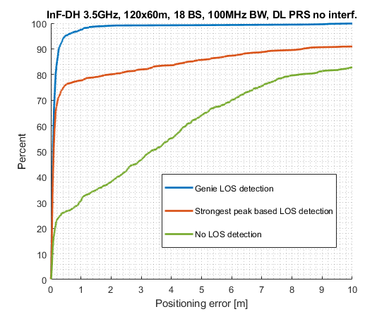
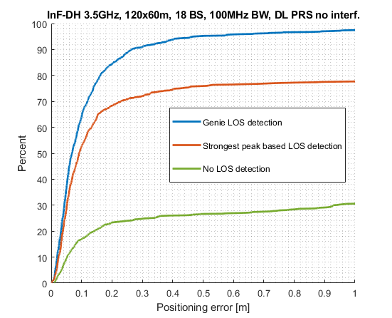
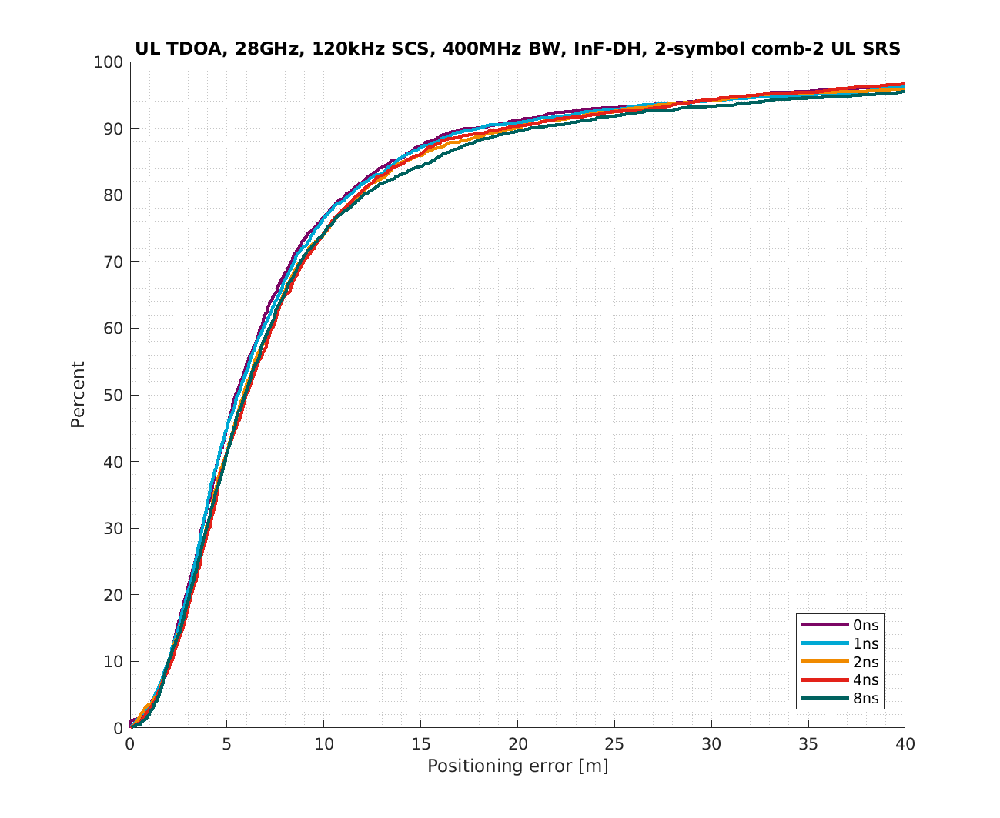
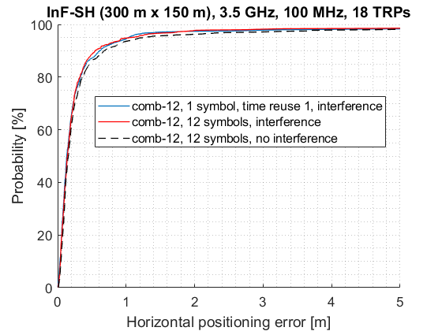
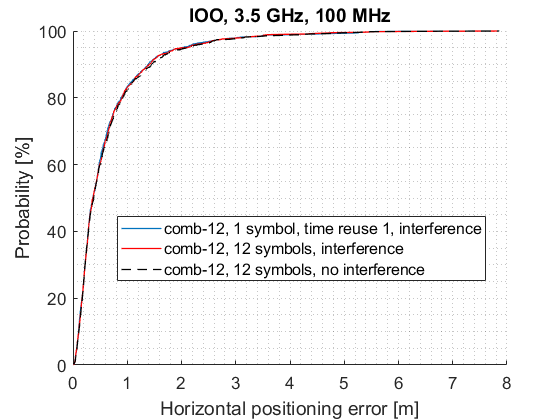

Figure 3: CDF 2D (horizontal) error for UTDOA, comparison of different gNB antenna configurations

Figure 4: CDF horizontal error , Tx Antenna diverstity
The evaluation on the Rel-17 UL-TDOA performance in InF-DH scenario focuses on the following test cases:
- Impact of gNB antenna configuration (case 4, case 5 and case 6)
- Impact UE Tx Power and UE antenna configuration (case 8, case 9 , case 10 and case 11)
- Uplink beam management (case 7, case 13 and case 14)
- Ideal LOS detection is used for the position calculation for all test cases.
Evaluation assumptions for system level analysis of NR positioning accuracy enhancements are provided in Table C.2.1.8.1-1.
Table C.2.1.8.1-1: NR positioning enhancements - evaluation scenarios and parameters
| Parameter | Case 4- config 220 (InF-DH, FR1,UL-TDOA) |
Case 5- config 320 (InF-DH, FR1,UL-TDOA) |
Case 6- config 420 (InF-DH, FR1,UL-TDOA) |
Case 7- config 421 (InF-DH, FR1,UL-TDOA) |
|---|---|---|---|---|
| Channel model (baseline, otherwise state any modifications) | InF-DH (r =0.4,hc=2m, dClutter=2m) |
InF-DH (r =0.4,hc=2m, dClutter=2m) |
InF-DH (r =0.4,hc=2m, dClutter=2m) |
InF-DH (r =0.4,hc=2m, dClutter=2m) |
| Carrier frequency | 4GHz | 4GHz | 4GHz | 4GHz |
| Subcarrier spacing | 30kHz | 30kHz | 30kHz | 30kHz |
| Reference Signal Transmission Bandwidth | 100MHz | 100MHz | 100MHz | 100MHz |
| Reference Signal Physical Structure and Resource Allocation (RE pattern) (reference to figure in contribution) | KTC = 4 nbSymb = 1 |
KTC = 4 nbSymb = 1 |
KTC = 4 nbSymb = 1 |
KTC = 4 nbSymb = 1 |
Reference signal (type of sequence, number of ports, …) |
SRS, 1 Port |
SRS, 1 Port |
SRS, 1 Port |
SRS, 1 Port |
| Number of sites | 18 | 18 | 18 | 18 |
| Number of symbols used per occasion | 1 | 1 | 1 | 1 |
| number of occasions used per positioning estimate | 1 | 1 | 1 | 1 |
| Power-boosting level | 6dB | 6dB | 6dB | 6dB |
| Uplink power control (applied/not applied) | +23dBm | +23dBm | +23dBm | +23dBm |
| interference modelling (ideal muting, or other) | Interference between UEs sharing the same REs (“cyclic shift multiplex”) | Interference between UEs sharing the same REs (“cyclic shift multiplex”) | Interference between UEs sharing the same REs (“cyclic shift multiplex”) | Interference between UEs sharing the same REs (“cyclic shift multiplex”) |
| Description of Measurement Algorithm (e.g. super resolution, interference cancellation, ….) | IFP: First arrival path detection and evaluation of the first rising edge of the correlation function | IFP: First arrival path detection and evaluation of the first rising edge of the correlation function | IFP: First arrival path detection and evaluation of the first rising edge of the correlation function | IFP: First arrival path detection and evaluation of the first rising edge of the correlation function |
| Description of positioning technique / applied positioning algorithm (e.g. Least square, Taylor series, etc) | Levenberg Marquardt | Levenberg Marquardt | Levenberg Marquardt | Levenberg Marquardt |
| Network synchronization assumptions | Ideal | Ideal | Ideal | Ideal |
| UE/gNB Tx/Rx Calibration Error |
Not applied | Not applied | Not applied | Not applied |
| Beam-related assumption (beam sweeping / alignment assumptions at the tx and rx sides) | Power of the first arriving taps | Power of the first arriving taps | Power of the first arriving taps | RSRP used for Rx beam selection |
| Precoding assumptions (codebook, nrof antenna elements used, etc) | Per site (Rx): Omni antenna 1 TXRU per panel per polarization dimension UE (Tx): Omni antenna |
Per site (Rx): 3 sectors (3 panels, one element per panel) 1 TXRU per panel per polarization dimension UE (Tx): Omni antenna |
Per site (Rx): 3 panels, 5 dual polarized beams per panel 1 TXRU per panel per polarization dimension UE (Tx): Omni antenna |
Per site (Rx): 3 panels, 5 dual polarized beams per panel 1 TXRU per panel per polarization dimension UE (Tx): Omni antenna |
| Evaluated Enhancement for Rel.17 |
Ideal LOS detection | Ideal LOS detection CIR analysis is used for the beam selection/spatial relationship establishment |
Ideal LOS detection CIR analysis is used for the beam selection/spatial relationship establishment |
Ideal LOS detection |
| Additional notes, if any | If the number of LOS links is sufficient, only LOS links are used for the position calculation (ideal LOS detection). If the number of LOS links is not sufficient all ToA-Values together with a signal power based signal quality are used by the positioning algorithm | Same note on the used LOS links as for case1 (config220) | Same note on the used LOS links as for case1 (config220) | Same note on the used LOS links as for case1 (config220) |
| Parameter | Case 8- config 422 (InF-DH, FR1,UL-TDOA) |
Case 9- config 423 (InF-DH, FR1,UL-TDOA) |
Case 10- config 443 (InF-DH, FR1,UL-TDOA) |
Case 11- config 444 (InF-DH, FR1,UL-TDOA |
|---|---|---|---|---|
| Channel model (baseline, otherwise state any modifications) | InF-DH (r =0.4,hc=2m, dClutter=2m) |
InF-DH (r =0.4,hc=2m, dClutter=2m) |
InF-DH (r =0.4,hc=2m, dClutter=2m) |
InF-DH (r =0.4,hc=2m, dClutter=2m) |
| Carrier frequency | 4GHz | 4GHz | 4GHz | 4GHz |
| Subcarrier spacing | 30kHz | 30kHz | 30kHz | 30kHz |
| Reference Signal Transmission Bandwidth | 100MHz | 100MHz | 100MHz | 100MHz |
| Reference Signal Physical Structure and Resource Allocation (RE pattern) (reference to figure in contribution) | KTC = 4 nbSymb = 1 |
KTC = 4 nbSymb = 1 |
KTC = 4 nbSymb = 1 |
KTC = 4 nbSymb = 1 |
Reference signal (type of sequence, number of ports, …) |
SRS, 1 Port |
SRS, 1 Port |
SRS, 1 Port (4 resources) |
SRS, 1 Port (4 resources) |
| Number of sites | 18 | 18 | 18 | 18 |
| Number of symbols used per occasion | 1 | 1 | 4 | 4 |
| number of occasions used per positioning estimate | 1 | 1 | 1 | 1 |
| Power-boosting level | 6dB | 6dB | 6dB | 6dB |
| Uplink power control (applied/not applied) | 0dBm | -20dBm | -20dBm | -20dBm |
| interference modelling (ideal muting, or other) | Interference between UEs sharing the same REs (“cyclic shift multiplex”) | Interference between UEs sharing the same REs (“cyclic shift multiplex”) | Interference between UEs sharing the same REs (“cyclic shift multiplex”) | Interference between UEs sharing the same REs (“cyclic shift multiplex”) |
| Description of Measurement Algorithm (e.g. super resolution, interference cancellation, ….) | IFP: First arrival path detection and evaluation of the first rising edge of the correlation function | IFP: First arrival path detection and evaluation of the first rising edge of the correlation function | IFP: First arrival path detection and evaluation of the first rising edge of the correlation function | IFP: First arrival path detection and evaluation of the first rising edge of the correlation function |
| Description of positioning technique / applied positioning algorithm (e.g. Least square, Taylor series, etc) | Levenberg Marquardt | Levenberg Marquardt | Levenberg Marquardt | Levenberg Marquardt |
| Network synchronization assumptions | Ideal | Ideal | Ideal | Ideal |
| UE/gNB Tx/Rx Calibration Error |
Not applied | Not applied | Not applied | Not applied |
| Beam-related assumption (beam sweeping / alignment assumptions at the tx and rx sides) | Power of the first arriving taps | Power of the first arriving taps | Power of the first arriving taps | Power of the first arriving taps |
| Precoding assumptions (codebook, nrof antenna elements used, etc) | Per site (Rx): 3 panels, 5 dual polarized beams per panel 1 TXRU per panel per polarization dimension UE (Tx): Omni antenna |
Per site (Rx): 3 panels, 5 dual polarized beams per panel 1 TXRU per panel per polarization dimension UE (Tx): Omni antenna |
Per site (Rx): 3 panels, 5 dual polarized beams per panel 1 TXRU per panel per polarization dimension UE (Tx): 4 non-ideal antennas at different positions |
Per site (Rx): 3 panels, 5 dual polarized beams per panel 1 TXRU per panel per polarization dimension UE (Tx): 4 ideal antennas at different positions |
| Evaluated Enhancement for Rel.17 |
Ideal LOS detection CIR analysis is used for the beam selection/spatial relationship establishment |
Ideal LOS detection CIR analysis is used for the beam selection/spatial relationship establishment |
Ideal LOS detection CIR analysis is used for the beam selection/spatial relationship establishment Gain of TX diversity with non-ideal UE antenna |
Ideal LOS detection CIR analysis is used for the beam selection/spatial relationship establishment Gain of TX diversity using 4 ideal UE antennas |
| Additional notes, if any | Same note on the used LOS links as for case1 (config220) | Same note on the used LOS links as for case1 (config220) | Same note on the used LOS links as for case1 (config220) | Same note on the used LOS links as for case1 (config220) |
| Parameter | Case 12- config 447 (InF-DH, FR1,UL-TDOA) |
Case 13- config 552 (InF-DH, FR2,UL-TDOA) |
Case 14- config 554 (InF-DH, FR2,UL-TDOA |
|
|---|---|---|---|---|
| Channel model (baseline, otherwise state any modifications) | InF-DH (r =0.4,hc=2m, dClutter=2m) |
InF-DH (r =0.4,hc=2m, dClutter=2m) |
InF-DH (r =0.4,hc=2m, dClutter=2m) |
|
| Carrier frequency | 4GHz | 28GHz | 28GHz | |
| Subcarrier spacing | 30kHz | 30kHz | 120kHz | |
| Reference Signal Transmission Bandwidth | 100MHz | 100MHz | 400Mhz | |
| Reference Signal Physical Structure and Resource Allocation (RE pattern) (reference to figure in contribution) | KTC = 4 nbSymb = 1 |
KTC = 4 nbSymb = 1 |
KTC = 4 nbSymb = 4 |
|
Reference signal (type of sequence, number of ports, …) |
SRS, 1 Port |
SRS, 1 Port |
SRS, 1 Port |
|
| Number of sites | 18 | 18 | 18 | |
| Number of symbols used per occasion | 4 | 4 | 12*4 (12 different UE TX beams, 4 symbols per SRS resource) |
|
| number of occasions used per positioning estimate | 1 | 1 | 1 | |
| Power-boosting level | 6dB | 6dB | 6dB | |
| Uplink power control (applied/not applied) | 23dBm | 23dBm | 0dBm | |
| interference modelling (ideal muting, or other) | Interference between UEs sharing the same REs (“cyclic shift multiplex”) | Interference between UEs sharing the same REs (“cyclic shift multiplex”) | Interference between UEs sharing the same REs (“cyclic shift multiplex”) | |
| Description of Measurement Algorithm (e.g. super resolution, interference cancellation, ….) | IFP: First arrival path detection and evaluation of the first rising edge of the correlation function | IFP: First arrival path detection and evaluation of the first rising edge of the correlation function | IFP: First arrival path detection and evaluation of the first rising edge of the correlation function | |
| Description of positioning technique / applied positioning algorithm (e.g. Least square, Taylor series, etc) | Levenberg Marquardt | Levenberg Marquardt | Levenberg Marquardt | |
| Network synchronization assumptions | Ideal | Ideal | Ideal | |
| UE/gNB Tx/Rx Calibration Error |
Not applied | Not applied | Not applied | |
| Beam-related assumption (beam sweeping / alignment assumptions at the tx and rx sides) | Power of the first arriving taps | Power of the first arriving taps | Power of the first arriving taps | |
| Precoding assumptions (codebook, nrof antenna elements used, etc) | Per site (Rx): 3 panels, 5 dual polarized beams per panel Virtualization model: 1 TXRU per panel per polarization dimension UE (Tx): 4 antenna panels (same characteristic as FR2 antenna), one element per panel |
Per site (Rx): 3 panels, 5 dual polarized beams per panel Virtualization model: 1 TXRU per panel per polarization dimension UE (Tx): 4 antenna panels |
Per site (Rx): 3 panels, 5 dual polarized beams per panel Virtualization model: 1 TXRU per panel per polarization dimension UE (Tx): 4 antenna panels |
|
| Evaluated Enhancement for Rel.17 |
Ideal LOS detection CIR analysis is used for the beam selection/spatial relationship establishment |
Ideal LOS detection CIR analysis is used for the beam selection/spatial relationship establishment |
Ideal LOS detection CIR analysis is used for the beam selection/spatial relationship establishment |
|
| Additional notes, if any | Same note on the used LOS links as for case1 (config220) | Same note on the used LOS links as for case1 (config220) | Same note on the used LOS links as for case1 (config220) |
Evaluation results of horizontal location error for NR positioning enhancements are provided in Table C.2.1.8.2-1:
Table C.2.1.8.2-1: NR positioning enhancements - horizontal location error results from [18]
| 50% | 67% | 80% | 90% | ||
|---|---|---|---|---|---|
Case 4- config 220 (InF-DH, FR1,UL-TDOA) |
Convex UEs | 0.15 | 0.23 | 0.36 | 0.70 |
Case 5- config 320 (InF-DH, FR1,UL-TDOA) |
Convex UEs | 0.11 | 0.18 | 0.27 | 0.45 |
Case 6- config 420 (InF-DH, FR1,UL-TDOA) |
Convex UEs | 0.09 | 0.15 | 0.23 | 0.43 |
Case 7- config 421 (InF-DH, FR1,UL-TDOA) |
Convex UEs | 0.16 | 0.54 | 2.68 | >3.00 |
Case 8- config 422 (InF-DH, FR1,UL-TDOA) |
Convex UEs | 0.09 | 0.15 | 0.23 | 0.44 |
Case 9- config 423 (InF-DH, FR1,UL-TDOA) |
Convex UEs | 0.10 | 0.16 | 0.27 | 0.59 |
Case 10- config 443 (InF-DH, FR1,UL-TDOA) |
Convex UEs | 0.07 | 0.13 | 0.22 | 0.50 |
Case 11- config 444 (InF-DH, FR1,UL-TDOA) |
Convex UEs | 0.07 | 0.12 | 0.21 | 0.49 |
Case 12- config 447 (InF-DH, FR1,UL-TDOA) |
Convex UEs | 0.08 | 0.14 | 0.28 | 0.95 |
Case 13- config 552 (InF-DH, FR1,UL-TDOA) |
Convex UEs | 0.12 | 0.21 | 0.43 | 1.70 |
Case 14- config 554 (InF-DH, FR1,UL-TDOA) |
Convex UEs | 0.02 | 0.03 | 0.05 | 0.09 |
Evaluation results of vertical location error for NR positioning enhancements are provided in Table C.2.1.8.2-2:
Table C.2.1.8.2-2: NR positioning enhancements - altitude location error results from [18]
| 50% | 67% | 80% | 90% | ||
|---|---|---|---|---|---|
Case 4- config 220 (InF-DH, FR1,UL-TDOA) |
Convex UEs | 0.33 | 0.55 | 0.95 | 1.84 |
Case 5- config 320 (InF-DH, FR1,UL-TDOA) |
Convex UEs | 0.24 | 0.41 | 0.68 | 1.19 |
Case 6- config 420 (InF-DH, FR1,UL-TDOA) |
Convex UEs | 0.18 | 0.33 | 0.57 | 1.12 |
Case 7- config 421 (InF-DH, FR1,UL-TDOA) |
Convex UEs | 0.39 | 1.29 | 6.33 | 10.0 |
Case 8- config 422 (InF-DH, FR1,UL-TDOA) |
Convex UEs | 0.21 | 0.35 | 0.61 | 1.15 |
Case 9- config 423 (InF-DH, FR1,UL-TDOA) |
Convex UEs | 0.21 | 0.36 | 0.65 | 1.56 |
Case 10- config 443 (InF-DH, FR1,UL-TDOA) |
Convex UEs | 0.15 | 0.27 | 0.48 | 1.12 |
Case 11- config 444 (InF-DH, FR1,UL-TDOA) |
Convex UEs | 0.15 | 0.26 | 0.49 | 1.43 |
Case 12- config 447 (InF-DH, FR1,UL-TDOA) |
Convex UEs | 0.17 | 0.35 | 0.75 | 2.23 |
Case 13- config 552 (InF-DH, FR1,UL-TDOA) |
Convex UEs | 0.26 | 0.54 | 1.14 | 4.28 |
Case 14- config 554 (InF-DH, FR1,UL-TDOA) |
Convex UEs | 0.04 | 0.07 | 0.12 | 0.24 |
| FR1 Results | |
|---|---|
Figure 3: CDF 2D (horizontal) error for UTDOA, comparison of different gNB antenna configurations |
Figure 4: CDF horizontal error , Tx Antenna diverstity |
| FR1 Results | |
|---|---|
Figure 5: CDF horizontal error for UTDOA, comparison of different UE TX Power levels |
Figure 6: CDF horizontal error for UTDOA, Beam pair selection |
| FR2 Results |
|---|
Figure 12: CDF horizontal error UTDOA |
Figure 14: CDF 2D error for UTDOA, FR2 (400MHz BW) |
In this section results are provided for the following scenarios.
- Baseline Scenarios for horizontal positioning evaluation: InF-SH, InF-DH, InH-OO, FR2/FR1, Convex UEs/ All UEs, Fixed UE height = 1.5 m,
- Baseline Scenarios for vertical positioning evaluation: InF-SH, InF-DH, FR2/FR1, Various UE height: UEH ∈ [0.5, 2] m/ UEH ∈ [0, 8] m, Fixed gNB height (8 m)/ Various gNB height ({4,8}),
- InF-SH FR2 using proposed various gNB height for vertical positioning,
- InF-SH FR2 using different size of bandwidth: BW = 400MHz/ 100MHz/ 50MHz/ 20MHz.
Evaluation assumptions for system level analysis are provided in Table C.2.1.9.1-1 and Table C.2.1.9.1-2.
Table C.2.1.9.1-1: NR positioning enhancements - evaluation scenarios and parameters
| Parameter | [Case7, InF- SH, FR2], [Case9, InF-DH, FR2], [Case11, InH-OO, FR2] |
[Case8, InF- SH, FR1], [Case10, InF-DH, FR1], [Case12, InH-OO, FR1] |
Case13, InF- SH, FR2], [Case15, InF-DH, FR2], |
[Case14, InF- SH, FR1], [Case16, InF-DH, FR1], |
Case17, InF- SH, FR2], [Case19, InF-DH, FR2], |
[Case18, InF- SH, FR1], [Case20, InF-DH, FR1], |
|---|---|---|---|---|---|---|
| Channel model (baseline, otherwise state any modifications) | Baseline | Baseline | Baseline | Baseline | Baseline | Baseline |
| Carrier frequency | 28 GHz | 1.5 GHz | 28 GHz | 1.5 GHz | 28 GHz | 1.5 GHz |
| Subcarrier spacing | 120 kHz | 30 kHz | 120 kHz | 30 kHz | 120 kHz | 30 kHz |
| Reference Signal Transmission Bandwidth | 400 MHz | 100 MHz | 400 MHz | 100 MHz | 400 MHz | 100 MHz |
| Reference Signal Physical Structure and Resource Allocation (RE pattern) (reference to figure in contribution) | Comb-6, 6 symbols | Comb-6, 6 symbols | Comb-6, 6 symbols | Comb-6, 6 symbols | Comb-6, 6 symbols | Comb-6, 6 symbols |
Reference signal (type of sequence, number of ports, …) |
Pseudo-random sequence, 1 antenna port | |||||
| Number of sites | 18 sites in InF, 12 sites in InH | |||||
| Number of symbols used per occasion | 6 | 6 | 6 | 6 | 6 | 6 |
| number of occasions used per positioning estimate | 1 | 1 | 1 | 1 | 1 | 1 |
| Power-boosting level | 6 dB | 6 dB | 6 dB | 6 dB | 6 dB | 6 dB |
| Uplink power control (applied/not applied) | not applied | |||||
| interference modelling (ideal muting, or other) | ideal muting | |||||
| Description of Measurement Algorithm (e.g. super resolution, interference cancellation, ….) | Adaptive threshold-based first peak detection for TOA measurement | |||||
| Description of positioning technique / applied positioning algorithm (e.g. Least square, Taylor series, etc) | Filtering the TOA measurements by FPAR using a predefined threshold, AoD measurement from the estimated angular spectrum, NLOS Detection algorithms, TDOA-AOD based maximum likelihood positioning algorithm. |
|||||
| Network synchronization assumptions | Perfect synchronization | |||||
| UE/gNB Tx/Rx Calibration Error |
0 | |||||
| Beam-related assumption (beam sweeping / alignment assumptions at the tx and rx sides) | Beam sweeping at Tx, MUSIC based signal combining at Rx | |||||
| Precoding assumptions (codebook, nrof antenna elements used, etc) | Kronecker Product Codebook (Kronecker product of two oversampled DFT codewords) | |||||
| Evaluated Enhancement for Rel.17 |
NLOS Detection algorithms (NLOS state estimator) | |||||
| Additional notes, if any | Horizontal positioning only, Fixed gNB height, Fixed UE height |
Horizontal and vertical positioning, Fixed gNB height or various gNB height, UE height ∈ [0.5, 2] m |
Horizontal and vertical positioning, Fixed gNB height or various gNB height, UE height ∈ [0, 8] m |
|||
Table C.2.1.9.1-2: NR positioning enhancements - evaluation scenarios and parameters
| Parameter | [Case21, InF- SH, FR2] | [Case21, InF- SH, FR2] | [Case22, InF- SH, FR2] | [Case23, InF- SH, FR2] |
|---|---|---|---|---|
| Channel model (baseline, otherwise state any modifications) | Baseline | Baseline | Baseline | Baseline |
| Carrier frequency | 28 GHz | 28 GHz | 28 GHz | 28 GHz |
| Subcarrier spacing | 120 kHz | 120 kHz | 120 kHz | 120 kHz |
| Reference Signal Transmission Bandwidth | 100 MHz | 100 MHz | 50 MHz | 20 MHz |
| Reference Signal Physical Structure and Resource Allocation (RE pattern) (reference to figure in contribution) | Comb-4, 4 symbols | Comb-4, 4 symbols | Comb-4, 4 symbols | Comb-4, 4 symbols |
Reference signal (type of sequence, number of ports, …) |
Pseudo-random sequence, 1 antenna port | |||
| Number of sites | 18 sites in InF, 12 sites in InH | |||
| Number of symbols used per occasion | 6 | 6 | 6 | 6 |
| number of occasions used per positioning estimate | 1 | 1 | 1 | 1 |
| Power-boosting level | 6 dB | 6 dB | 6 dB | 6 dB |
| Uplink power control (applied/not applied) | not applied | |||
| interference modelling (ideal muting, or other) | ideal muting | |||
| Description of Measurement Algorithm (e.g. super resolution, interference cancellation, ….) | Adaptive threshold-based first peak detection for TOA measurement | |||
| Description of positioning technique / applied positioning algorithm (e.g. Least square, Taylor series, etc) | Filtering the TOA measurements by FPAR using a predefined threshold, AoD measurement from the estimated angular spectrum, NLOS Detection algorithms, TDOA-AOD based maximum likelihood positioning algorithm. |
|||
| Network synchronization assumptions | Perfect synchronization | |||
| UE/gNB Tx/Rx Calibration Error |
0 | |||
| Beam-related assumption (beam sweeping / alignment assumptions at the tx and rx sides) | Beam sweeping at Tx, MUSIC based signal combining at Rx | |||
| Precoding assumptions (codebook, nrof antenna elements used, etc) | Kronecker Product Codebook (Kronecker product of two oversampled DFT codewords) | |||
| Evaluated Enhancement for Rel.17 |
NLOS Detection algorithms (NLOS state estimator) | |||
| Additional notes, if any | Horizontal positioning only, Fixed gNB height, Fixed UE height |
|||
Evaluation results of horizontal location error for NR positioning enhancements are provided in Table C.2.1.9.2-1:
Table C.2.1.9.2-1: NR positioning enhancements - horizontal location error results
| 50% | 67% | 80% | 90% | ||
|---|---|---|---|---|---|
| [Case 7], [InF-SH], [FR2], [400 MHz], [Comb-6], [6dB PB] | Convex UEs | 0.025 | 0.0344 | 0.046 | 0.074 |
| (Optional) All UEs | 0.033 | 0.048 | 0.075 | 0.23 | |
| [Case 8], [InF-SH], [FR1], [100 MHz], [Comb-6], [6dB PB] | Convex UEs | 0.10 | 0.14 | 0.20 | 0.38 |
| (Optional) All UEs | 0.13 | 0.19 | 0.30 | 0.67 | |
| [Case 9], [InF-DH], [FR2], [400 MHz], [Comb-6], [6dB PB] | Convex UEs | 0.044 | 0.075 | 0.53 | 1.96 |
| (Optional) All UEs | 0.063 | 0.31 | 1.31 | 2.12 | |
| [Case 10], [InF-DH], [FR1], [100 MHz], [Comb-6], [6dB PB] | Convex UEs | 0.20 | 0.46 | 1.49 | 2.13 |
| (Optional) All UEs | 0.29 | 0.75 | 1.60 | 3.62 | |
| [Case 11], [InH-OO], [FR2], [400 MHz], [Comb-6], [6dB PB] | Convex UEs | 0.041 | 0.062 | 0.11 | 0.31 |
| (Optional) All UEs | 0.054 | 0.095 | 0.18 | 0.39 | |
| [Case 12], [InH-OO], [FR1], [100 MHz], [Comb-6], [6dB PB] | Convex UEs | 0.20 | 0.29 | 0.42 | 0.69 |
| (Optional) All UEs | 0.20 | 0.33 | 0.53 | 0.98 |
Evaluation results of vertical location error for NR positioning enhancements are provided in Table C.2.1.9.2-2:
Table C.2.1.9.2-2: NR positioning enhancements - Vertical location error results
| Case | gNB Deployment | 50% | 67% | 80% | 90% |
|---|---|---|---|---|---|
[Case 13], [InF-SH], [FR2], [400 MHz], [Comb-6], [6dB PB], [ UEH ∈ [0.5, 2] m] |
gNBH ∈ {4,8} m | 0.17 | 0.29 | 0.48 | 0.77 |
| gNBH = 8 m | 0.17 | 0.31 | 0.48 | 0.83 | |
[Case 14], [InF-SH], [FR1], [100 MHz], [Comb-6], [6dB PB], [UEH ∈ [0.5, 2] m] |
gNBH ∈ {4,8} m, | 0.78 | 1.06 | 1.29 | 1.51 |
| gNBH = 8 m, | 0.86 | 1.12 | 1.38 | 1.59 | |
[Case 15], [InF-DH], [FR2], [400 MHz], [Comb-6], [6dB PB], [UEH ∈ [0.5, 2] m] |
gNBH ∈ {4,8} m, | 0.69 | 0.91 | 1.10 | 1.34 |
| gNBH = 8 m, | 0.44 | 0.69 | 1.01 | 1.42 | |
[Case 16], [InF-DH], [FR1], [100 MHz], [Comb-6], [6dB PB], [UEH ∈ [0.5, 2] m] |
gNBH ∈ {4,8} m, | 0.77 | 1.01 | 1.23 | 1.47 |
| gNBH = 8 m, | 0.84 | 1.08 | 1.34 | 1.58 | |
[Case 17], [InF-SH], [FR2], [400 MHz], [Comb-6], [6dB PB], [UEH ∈ [0, 8] m] |
gNBH ∈ {4,8} m | 0.84 | 1.01 | 1.18 | 1.34 |
| gNBH = 8 m | 0.75 | 1.12 | 1.51 | 1.88 | |
| gNBH ∈ {2, 4, 6, 8} m | 0.45 | 0.58 | 0.72 | 0.93 | |
| gNBH = {1, 2, 3, 4, 5, 6, 7, 8} m, | 0.35 | 0.48 | 0.65 | 0.86 | |
| gNBH = {1: 0.5: 8} m | 0.26 | 0.39 | 0.57 | 0.79 | |
[Case 18], [InF-SH], [FR1], [100 MHz], [Comb-6], [6dB PB], [UEH ∈ [0, 8] m] |
gNBH ∈ {4,8}m | 0.96 | 1.25 | 1.50 | 1.73 |
| gNBH = 8 m | 0.98 | 1.38 | 1.78 | 2.16 | |
[Case 19], [InF-DH], [FR2], [400 MHz], [Comb-6], [6dB PB], [UEH ∈ [0, 8] m] |
gNBH ∈ {4,8} m | 0.85 | 1.22 | 1.62 | 2.11 |
| gNBH = 8 m | 1.56 | 2.02 | 2.53 | 3.04 | |
[Case 20], [InF-DH], [FR1], [100 MHz], [Comb-6], [6dB PB], [UEH ∈ [0, 8] m] |
gNBH ∈ {4,8}m | 0.85 | 1.25 | 1.77 | 2.57 |
| gNBH = 8 m | 1.31 | 1.74 | 2.18 | 2.69 |
Evaluation results of horizontal location error for NR positioning enhancements with various bandwidths are provided in Table C.2.1.9.2-3:
Table C.2.1.9.2-3: NR positioning enhancements - horizontal location error results in InF-SH FR2 scenario using different bandwidth
| Case | Bandwidth | 50% | 67% | 80% | 90% |
|---|---|---|---|---|---|
| [Case 21], [InF-SH], [FR2], [400 MHz], [Comb-4], [6dB PB] | 400 MHz | 0.025 | 0.034 | 0.046 | 0.086 |
| [Case 22], [InF-SH], [FR2], [100 MHz], [Comb-4], [6dB PB] | 100 MHz | 0.14 | 0.19 | 0.25 | 0.36 |
| [Case 23], [InF-SH], [FR2], [50 MHz], [Comb-4], [6dB PB] | 50 MHz | 0.20 | 0.27 | 0.38 | 0.77 |
| [Case 24], [InF-SH], [FR2], [20 MHz], [Comb-4], [6dB PB] | 20 MHz | 0.39 | 0.60 | 0.90 | 1.45 |
Simulation results given by the CDF of the positioning error can be found from figure C.2.1.9.2-1 to C.2.1.9.2-6.


Figure C.2.1.9.2-1: Rel-17 horizontal positioning evaluation in InF-SH and InF-DH scenario, referring to Case 7 to Case 10.

Figure C.2.1.9.2-2: Rel-17 horizontal positioning evaluation in InH-OO scenario, referring to Case 11 to Case 12.


Figure C.2.1.9.2-3: Rel-17 vertical positioning evaluation in InF-SH and InF-DH scenarios, UE height within a range [0.5, 2] m, referring to Case 13 to Case 16.


Figure C.2.1.9.2-4: Rel-17 vertical positioning evaluation in InF-SH and InF-DH scenarios, UE height within a range [0, 8] m, referring to Case 17 to Case 20.

Figure C.2.1.9.2-5: Rel-17 vertical positioning evaluation in InF-SH FR2 scenario, UE height within a range [0, 8] m, referring to Case 17.

Figure C.2.1.9.2-6: Rel-17 horizontal positioning evaluation in InF-SH FR2 scenario, referring to Case 21 to Case 24.
The following enhancements were evaluated for rel17:
- Line of Sight (LOS) detection
- Rx-Tx timing error mitigation for multi-panel UEs
- 1-symbol PRS
- Threshold based Channel peaks detection
- Cyclic shift enhancements for SRS
- PRS aggregation
Evaluation assumptions for system level analysis of NR positioning accuracy enhancements are provided in Table C.2.1.10.1-1a-k.
Table C.2.1.10.1-1a: NR positioning enhancements - evaluation scenarios and parameters for line of sight detection
| Parameter | [21], source E1, Inf DH, FR1, DL TDOA | [[21], source E2, Inf DH, FR1, DL TDOA | [[21], source E3, Inf DH, FR1, DL TDOA |
|---|---|---|---|
| Channel model (baseline, otherwise state any modifications) | Inf DH, 120x60m | Inf DH, 120x60m | Inf DH, 120x60m |
| Carrier frequency | 3.5GHz | 3.5GHz | 3.5GHz |
| Subcarrier spacing | 30KHz | 30KHz | 30KHz |
| Reference Signal Transmission Bandwidth | 100MHz | 100MHz | 100MHz |
| Reference Signal Physical Structure and Resource Allocation (RE pattern) (reference to figure in contribution) | PRS staggered comb 12 | PRS staggered comb 12 | PRS staggered comb 12 |
Reference signal (type of sequence, number of ports, …) |
DL PRS | DL PRS | DL PRS |
| Number of sites | 18 | 18 | 18 |
| Number of symbols used per occasion | 12 | 12 | 12 |
| number of occasions used per positioning estimate | 1 | 1 | 1 |
| Power-boosting level | 10.8dB | 10.8dB | 10.8dB |
| Uplink power control (applied/not applied) | Not applied | Not applied | Not applied |
| interference modelling (ideal muting, or other) | ideal | ideal | ideal |
| Description of Measurement Algorithm (e.g. super resolution, interference cancellation, ….) | Genie peak detection | Strongest peak LOS detection | No LOS detection |
| Description of positioning technique / applied positioning algorithm (e.g. Least square, Taylor series, etc) | DL-TDOA | DL-TDOA | DL-TDOA |
| Network synchronization assumptions | ideal | ideal | Idea |
| UE/gNB Tx/Rx Calibration Error |
N/A | N/A | N/A |
| Beam-related assumption (beam sweeping / alignment assumptions at the tx and rx sides) | N/A | N/A | N/A |
| Precoding assumptions (codebook, nrof antenna elements used, etc) | N/A | N/A | N/A |
| Evaluated Enhancement for Rel.17 |
LOS detection | LOS detection | LOS detection |
| Additional notes, if any |
Table C.2.1.10.1-1c: NR positioning enhancements - evaluation scenarios and parameters for timing error evaluations baseline Inf SH
| Parameter | [21], source 10, InF SH FR2, UL TDOA | [21], source 11 InF SH FR2, UL TDOA | [21], source 12 InF SH FR2, UL TDOA | [21], source 13 InF SH FR2, UL TDOA | [21], source 14 InF SH FR2, UL TDOA | [21], source 15 InF SH FR2, DL TDOA | [21], source 16 InF SH FR2, DL TDOA | [21], source 17 InF SH FR2, DL TDOA | [21], source 18 InF SH FR2, DL TDOA | [21], source 19 InF SH FR2, DL TDOA |
|---|---|---|---|---|---|---|---|---|---|---|
| Channel model (baseline, otherwise state any modifications) | baseline | baseline | baseline | baseline | baseline | baseline | baseline | baseline | baseline | baseline |
| Carrier frequency | 28Ghz | 28Ghz | 28Ghz | 28Ghz | 28Ghz | 28Ghz | 28Ghz | 28Ghz | 28Ghz | 28Ghz |
| Subcarrier spacing | 120KHz | 120KHz | 120KHz | 120KHz | 120KHz | 120KHz | 120KHz | 120KHz | 120KHz | 120KHz |
| Reference Signal Transmission Bandwidth | 400MHz | 400MHz | 400MHz | 400MHz | 400MHz | 400MHz | 400MHz | 400MHz | 400MHz | 400MHz |
| Reference Signal Physical Structure and Resource Allocation (RE pattern) (reference to figure in contribution) | 2 symbols comb 2 SRS | 2 symbols comb 2 SRS | 2 symbols comb 2 SRS | 2 symbols comb 2 SRS | 2 symbols comb 2 SRS | PRS staggered comb 2 | PRS staggered comb 2 | PRS staggered comb 2 | PRS staggered comb 2 | PRS staggered comb 2 |
Reference signal (type of sequence, number of ports, …) |
SRS pos | SRS pos | SRS pos | SRS pos | SRS pos | DL PRS | DL PRS | DL PRS | DL PRS | DL PRS |
| Number of sites | 18 | 18 | 18 | 18 | 18 | 18 | 18 | 18 | 18 | 18 |
| Number of symbols used per occasion | 2 | 2 | 2 | 2 | 2 | 2 | 2 | 2 | 2 | 2 |
| number of occasions used per positioning estimate | 1 | 1 | 1 | 1 | 1 | 1 | 1 | 1 | 1 | 1 |
| Power-boosting level | 3dB | 3dB | 3dB | 3dB | 3dB | 3dB | 3dB | 3dB | 3dB | 3dB |
| Uplink power control (applied/not applied) | none | none | none | none | none | X | X | X | X | X |
| interference modelling (ideal muting, or other) | ideal | ideal | ideal | ideal | ideal | ideal | ideal | ideal | ideal | ideal |
| Description of Measurement Algorithm (e.g. super resolution, interference cancellation, ….) | UL TDOA | UL TDOA | UL TDOA | UL TDOA | UL TDOA | DL-TDOA | DL-TDOA | DL-TDOA | DL-TDOA | DL-TDOA |
| Description of positioning technique / applied positioning algorithm (e.g. Least square, Taylor series, etc) | UL TDOA | UL TDOA | UL TDOA | UL TDOA | UL TDOA | DL-TDOA | DL-TDOA | DL-TDOA | DL-TDOA | DL-TDOA |
| Network synchronization assumptions | ideal | ideal | Idea | ideal | ideal | ideal | ideal | Idea | ideal | ideal |
| UE/gNB Tx/Rx Calibration Error |
0ns | 1ns | 2ns | 4ns | 8ns | 0ns | 1ns | 2ns | 4ns | 8ns |
| Beam-related assumption (beam sweeping / alignment assumptions at the tx and rx sides) | N/A | N/A | N/A | N/A | N/A | N/A | N/A | N/A | N/A | N/A |
| Precoding assumptions (codebook, nrof antenna elements used, etc) | N/A | N/A | N/A | N/A | N/A | N/A | N/A | N/A | N/A | N/A |
| Evaluated Enhancement for Rel.17 |
N/A | N/A | N/A | N/A | N/A | N/A | N/A | N/A | N/A | N/A |
| Additional notes, if any |
Table C.2.1.10.1-1d: NR positioning enhancements - evaluation scenarios and parameters for timing error evaluations Inf SH with enhancements
| Parameter | [21], source 20, InF SH FR2, UL TDOA | [21], source 21 InF SH FR2, UL TDOA | [21], source 22 InF SH FR2, DL TDOA | [21], source 23 InF SH FR2, DL TDOA |
|---|---|---|---|---|
| Channel model (baseline, otherwise state any modifications) | baseline | baseline | baseline | baseline |
| Carrier frequency | 28Ghz | 28Ghz | 28Ghz | 28Ghz |
| Subcarrier spacing | ||||
| Reference Signal Transmission Bandwidth | 400MHz | 400MHz | 400MHz | 400MHz |
| Reference Signal Physical Structure and Resource Allocation (RE pattern) (reference to figure in contribution) | 2 symbols comb 2 SRS | 2 symbols comb 2 SRS | PRS staggered comb 2 | PRS staggered comb 2 |
Reference signal (type of sequence, number of ports, …) |
SRS pos | SRS pos | DL PRS | DL PRS |
| Number of sites | 18 | 18 | 18 | 18 |
| Number of symbols used per occasion | 2 | 2 | 2 | 2 |
| number of occasions used per positioning estimate | 1 | 1 | 1 | 1 |
| Power-boosting level | 3dB | 3dB | 3dB | 3dB |
| Uplink power control (applied/not applied) | none | none | none | none |
| interference modelling (ideal muting, or other) | ideal | ideal | ideal | ideal |
| Description of Measurement Algorithm (e.g. super resolution, interference cancellation, ….) | UL TDOA | UL TDOA | DL-TDOA | DL-TDOA |
| Description of positioning technique / applied positioning algorithm (e.g. Least square, Taylor series, etc) | UL TDOA | UL TDOA | DL-TDOA | DL-TDOA |
| Network synchronization assumptions | ideal | ideal | ideal | ideal |
| UE/gNB Tx/Rx Calibration Error |
0ns | 8ns | 0ns | 8ns |
| Beam-related assumption (beam sweeping / alignment assumptions at the tx and rx sides) | N/A | N/A | N/A | N/A |
| Precoding assumptions (codebook, nrof antenna elements used, etc) | N/A | N/A | N/A | N/A |
| Evaluated Enhancement for Rel.17 |
Multi panel Tx | Multi panel Tx | Multi panel Tx | Multi panel Tx |
| Additional notes, if any |
Table C.2.1.10.1-1e: NR positioning enhancements - evaluation scenarios and parameters for timing error evaluations baseline Inf DH
| Parameter | [21], source 24, InF DH FR2, UL TDOA | [21], source 25 InF DH FR2, UL TDOA | [21], source 26 InF DH | [21], source 27 InF DH FR2, UL TDOA | [21], source 28 InF DH FR2, UL TDOA |
|---|---|---|---|---|---|
| Channel model (baseline, otherwise state any modifications) | baseline | baseline | baseline | baseline | baseline |
| Carrier frequency | 28Ghz | 28Ghz | 28Ghz | 28Ghz | 28Ghz |
| Subcarrier spacing | |||||
| Reference Signal Transmission Bandwidth | 400MHz | 400MHz | 400MHz | 400MHz | 400MHz |
| Reference Signal Physical Structure and Resource Allocation (RE pattern) (reference to figure in contribution) | 2 symbols comb 2 SRS | 2 symbols comb 2 SRS | 2 symbols comb 2 SRS | 2 symbols comb 2 SRS | 2 symbols comb 2 SRS |
Reference signal (type of sequence, number of ports, …) |
SRS pos | SRS pos | SRS pos | SRS pos | SRS pos |
| Number of sites | 18 | 18 | 18 | 18 | 18 |
| Number of symbols used per occasion | 2 | 2 | 2 | 2 | 2 |
| number of occasions used per positioning estimate | 1 | 1 | 1 | 1 | 1 |
| Power-boosting level | 3dB | 3dB | 3dB | 3dB | 3dB |
| Uplink power control (applied/not applied) | none | none | none | none | none |
| interference modelling (ideal muting, or other) | ideal | ideal | ideal | ideal | ideal |
| Description of Measurement Algorithm (e.g. super resolution, interference cancellation, ….) | UL TDOA | UL TDOA | UL TDOA | UL TDOA | UL TDOA |
| Description of positioning technique / applied positioning algorithm (e.g. Least square, Taylor series, etc) | UL TDOA | UL TDOA | UL TDOA | UL TDOA | UL TDOA |
| Network synchronization assumptions | ideal | ideal | Idea | ideal | ideal |
| UE/gNB Tx/Rx Calibration Error |
0ns | 1ns | 2ns | 4ns | 8ns |
| Beam-related assumption (beam sweeping / alignment assumptions at the tx and rx sides) | N/A | N/A | N/A | N/A | N/A |
| Precoding assumptions (codebook, nrof antenna elements used, etc) | N/A | N/A | N/A | N/A | N/A |
| Evaluated Enhancement for Rel.17 |
N/A | N/A | N/A | N/A | N/A |
| Additional notes, if any |
Table C.2.1.10.1-1f: NR positioning enhancements - evaluation scenarios and parameters for 1-symbol PRS
| Parameter | [21], source E29, Inf SH, FR1, DL TDOA | [21], source E30, Inf SH, FR1, DL TDOA | [21], source E31, Inf SH, FR1, DL TDOA | [21], source E32, IOO, FR1, DL TDOA | [21], source E33, IOO, FR1, DL TDOA | [21], source E34, IOO, FR1, DL TDOA |
|---|---|---|---|---|---|---|
| Channel model (baseline, otherwise state any modifications) | Inf SH, 300x150m | Inf SH, 300x150m | Inf SH, 300x150m | baseline | baseline | baseline |
| Carrier frequency | 3.5GHz | 3.5GHz | 3.5GHz | 3.5GHz | 3.5GHz | 3.5GHz |
| Subcarrier spacing | ||||||
| Reference Signal Transmission Bandwidth | 100MHz | 100MHz | 100MHz | 100MHz | 100MHz | 100MHz |
| Reference Signal Physical Structure and Resource Allocation (RE pattern) (reference to figure in contribution) | PRS staggered comb 12 reuse 1 | PRS staggered comb 12 | PRS staggered comb 12 | PRS staggered comb 12 reuse 1 | PRS staggered comb 12 | PRS staggered comb 12 |
Reference signal (type of sequence, number of ports, …) |
DL PRS | DL PRS | DL PRS | DL PRS | DL PRS | DL PRS |
| Number of sites | 18 | 18 | 18 | 12 | 12 | 12 |
| Number of symbols used per occasion | 1 | 12 | 12 | 1 | 12 | 12 |
| number of occasions used per positioning estimate | 1 | 1 | 1 | 1 | 1 | 1 |
| Power-boosting level | 10.8dB | 10.8dB | 10.8dB | 10.8dB | 10.8dB | 10.8dB |
| Uplink power control (applied/not applied) | none | none | none | none | none | none |
| interference modelling (ideal muting, or other) | interference | interference | No interference | interference | interference | No interference |
| Description of Measurement Algorithm (e.g. super resolution, interference cancellation, ….) | DL TDOA | DL TDOA | DL TDOA | DL TDOA | DL TDOA | DL TDOA |
| Description of positioning technique / applied positioning algorithm (e.g. Least square, Taylor series, etc) | DL-TDOA | DL-TDOA | DL-TDOA | DL-TDOA | DL-TDOA | DL-TDOA |
| Network synchronization assumptions | Ideal | Ideal | Ideal | Ideal | Ideal | Ideal |
| UE/gNB Tx/Rx Calibration Error |
N/A | N/A | N/A | N/A | N/A | N/A |
| Beam-related assumption (beam sweeping / alignment assumptions at the tx and rx sides) | N/A | N/A | N/A | N/A | N/A | N/A |
| Precoding assumptions (codebook, nrof antenna elements used, etc) | N/A | N/A | N/A | N/A | N/A | N/A |
| Evaluated Enhancement for Rel.17 |
1 symbol PRS | 1 symbol PRS | 1 symbol PRS | 1 symbol PRS | 1 symbol PRS | 1 symbol PRS |
| Additional notes, if any |
Table C.2.1.10.1-1g: NR positioning enhancements - evaluation scenarios and parameters for 1-symbol PRS
| Parameter | [21], source E35, Inf SH, FR1, DL TDOA< | [21], source E36, Inf SH, FR1, DL TDOA | [21], source E37, Inf SH, FR1, DL TDOA | [21], source E38, Inf SH, FR1, DL TDOA< | [21], source E39, IOO, FR1, DL TDOA | [21], source E40, IOO, FR1, DL TDOA |
|---|---|---|---|---|---|---|
| Channel model (baseline, otherwise state any modifications) | Inf SH, 300x150m | Inf SH, 300x150m | Inf SH, 300x150m | baseline | baseline | baseline |
| Carrier frequency | 3.5GHz | 3.5GHz | 3.5GHz | 3.5GHz | 3.5GHz | 3.5GHz |
| Subcarrier spacing | ||||||
| Reference Signal Transmission Bandwidth | 100MHz | 100MHz | 100MHz | 100MHz | 100MHz | 100MHz |
| Reference Signal Physical Structure and Resource Allocation (RE pattern) (reference to figure in contribution) | PRS staggered comb 6 reuse 3 | PRS staggered comb 6 | PRS staggered comb 6 | PRS staggered comb 6 reuse 2 | PRS staggered comb 6 | PRS staggered comb 6 |
Reference signal (type of sequence, number of ports, …) |
DL PRS | DL PRS | DL PRS | DL PRS | DL PRS | DL PRS |
| Number of sites | 18 | 18 | 18 | 12 | 12 | 12 |
| Number of symbols used per occasion | 1 | 6 | 6 | 1 | 6 | 6 |
| number of occasions used per positioning estimate | 1 | 1 | 1 | 1 | 1 | 1 |
| Power-boosting level | 7.7dB | 7.7dB | 7.7dB | 7.7dB | 7.7dB | 7.7dB |
| Uplink power control (applied/not applied) | none | none | none | none | none | none |
| interference modelling (ideal muting, or other) | interference | interference | No interference | interference | interference | No interference |
| Description of Measurement Algorithm (e.g. super resolution, interference cancellation, ….) | DL TDOA | DL TDOA | DL TDOA | DL TDOA | DL TDOA | DL TDOA |
| Description of positioning technique / applied positioning algorithm (e.g. Least square, Taylor series, etc) | DL-TDOA | DL-TDOA | DL-TDOA | DL-TDOA | DL-TDOA | DL-TDOA |
| Network synchronization assumptions | Ideal | Ideal | Ideal | Ideal | Ideal | Ideal |
| UE/gNB Tx/Rx Calibration Error |
N/A | N/A | N/A | N/A | N/A | N/A |
| Beam-related assumption (beam sweeping / alignment assumptions at the tx and rx sides) | N/A | N/A | N/A | N/A | N/A | N/A |
| Precoding assumptions (codebook, nrof antenna elements used, etc) | N/A | N/A | N/A | N/A | N/A | N/A |
| Evaluated Enhancement for Rel.17 |
1 symbol PRS | 1 symbol PRS | 1 symbol PRS | 1 symbol PRS | 1 symbol PRS | 1 symbol PRS |
| Additional notes, if any |
Table C.2.1.10.1-1h: NR positioning enhancements - evaluation scenarios and parameters for 1-symbol PRS
| Parameter | [21], source E41, Inf SH, FR1, DL TDOA< | [21], source E42, Inf SH, FR1, DL TDOA | [21], source E43, Inf SH, FR1, DL TDOA | [21], source E44, Inf SH, FR1, DL TDOA< | [21], source E45, IOO, FR1, DL TDOA | [21], source E46, IOO, FR1, DL TDOA |
|---|---|---|---|---|---|---|
| Channel model (baseline, otherwise state any modifications) | Inf SH, 300x150m | Inf SH, 300x150m | Inf SH, 300x150m | baseline | baseline | baseline |
| Carrier frequency | 3.5GHz | 3.5GHz | 3.5GHz | 3.5GHz | 3.5GHz | 3.5GHz |
| Subcarrier spacing | ||||||
| Reference Signal Transmission Bandwidth | 100MHz | 100MHz | 100MHz | 100MHz | 100MHz | 100MHz |
| Reference Signal Physical Structure and Resource Allocation (RE pattern) (reference to figure in contribution) | PRS staggered comb 2 reuse 9 | PRS staggered comb 2 | PRS staggered comb 2 | PRS staggered comb 2 reuse 6 | PRS staggered comb 2 | PRS staggered comb 2 |
Reference signal (type of sequence, number of ports, …) |
DL PRS | DL PRS | DL PRS | DL PRS | DL PRS | DL PRS |
| Number of sites | 18 | 18 | 18 | 12 | 12 | 12 |
| Number of symbols used per occasion | 1 | 2 | 2 | 1 | 2 | 2 |
| number of occasions used per positioning estimate | 1 | 1 | 1 | 1 | 1 | 1 |
| Power-boosting level | 3dB | 3dB | 3dB | 3dB | 3dB | 3dB |
| Uplink power control (applied/not applied) | none | none | none | none | none | none |
| interference modelling (ideal muting, or other) | interference | interference | No interference | interference | interference | No interference |
| Description of Measurement Algorithm (e.g. super resolution, interference cancellation, ….) | DL TDOA | DL TDOA | DL TDOA | DL TDOA | DL TDOA | DL TDOA |
| Description of positioning technique / applied positioning algorithm (e.g. Least square, Taylor series, etc) | DL-TDOA | DL-TDOA | DL-TDOA | DL-TDOA | DL-TDOA | DL-TDOA |
| Network synchronization assumptions | Ideal | Ideal | Ideal | Ideal | Ideal | Ideal |
| UE/gNB Tx/Rx Calibration Error |
N/A | N/A | N/A | N/A | N/A | N/A |
| Beam-related assumption (beam sweeping / alignment assumptions at the tx and rx sides) | N/A | N/A | N/A | N/A | N/A | N/A |
| Precoding assumptions (codebook, nrof antenna elements used, etc) | N/A | N/A | N/A | N/A | N/A | N/A |
| Evaluated Enhancement for Rel.17 |
1 symbol PRS | 1 symbol PRS | 1 symbol PRS | 1 symbol PRS | 1 symbol PRS | 1 symbol PRS |
| Additional notes, if any |
Table C.2.1.10.1-1i: NR positioning enhancements - evaluation scenarios and parameters for 1-symbol PRS with thresholding
| Parameter | [21], source E47, Inf DH, FR1, DL TDOA | [21], source E48, Inf DH, FR1, DL TDOA | [21], source E49, Inf DH, FR1, DL TDOA | [21], source E50, Inf DH, FR1, DL TDOA | [21], source E51, Inf DH, FR1, DL TDOA | [21], source E52, Inf DH, FR1, DL TDOA | [21], source E53, Inf DH, FR1, DL TDOA |
|---|---|---|---|---|---|---|---|
| Channel model (baseline, otherwise state any modifications) | Inf DH, | Inf DH, | Inf DH, | Inf DH, | Inf DH, | Inf DH, | Inf DH, |
| Carrier frequency | 3.5GHz | 3.5GHz | 3.5GHz | 3.5GHz | 3.5GHz | 3.5GHz | 3.5GHz |
| Subcarrier spacing | 30KHz | 30KHz | 30KHz | 30KHz | 30KHz | 30KHz | 30KHz |
| Reference Signal Transmission Bandwidth | 100MHz | 100MHz | 100MHz | 100MHz | 100MHz | 100MHz | 100MHz |
| Reference Signal Physical Structure and Resource Allocation (RE pattern) (reference to figure in contribution) | PRS staggered comb 12 | PRS staggered comb 12 | PRS staggered comb 12 | PRS staggered comb 12 | PRS staggered comb 12 | PRS staggered comb 12 | PRS staggered comb 12 |
Reference signal (type of sequence, number of ports, …) |
DL PRS | DL PRS | DL PRS | DL PRS | DL PRS | DL PRS | DL PRS |
| Number of sites | 18 | 18 | 18 | 18 | 18 | 18 | 18 |
| Number of symbols used per occasion | 1 | 1 | 1 | 1 | 1 | 1 | 1 |
| number of occasions used per positioning estimate | 1 | 1 | 1 | 1 | 1 | 1 | 1 |
| Power-boosting level | 10.8dB | 10.8dB | 10.8dB | 10.8dB | 10.8dB | 10.8dB | 10.8dB |
| Uplink power control (applied/not applied) | none | none | none | none | none | none | none |
| interference modelling (ideal muting, or other) | ideal | ideal | ideal | ideal | ideal | ideal | ideal |
| Description of Measurement Algorithm (e.g. super resolution, interference cancellation, ….) | DL TDOA | DL TDOA | DL TDOA | DL TDOA | DL TDOA | DL TDOA | DL TDOA |
| Description of positioning technique / applied positioning algorithm (e.g. Least square, Taylor series, etc) | DL-TDOA | DL-TDOA | DL-TDOA | DL-TDOA | DL-TDOA | DL-TDOA | DL-TDOA |
| Network synchronization assumptions | Ideal | Ideal | Ideal | Ideal | Ideal | Ideal | Ideal |
| UE/gNB Tx/Rx Calibration Error |
N/A | N/A | N/A | N/A | N/A | N/A | N/A |
| Beam-related assumption (beam sweeping / alignment assumptions at the tx and rx sides) | N/A | N/A | N/A | N/A | N/A | N/A | N/A |
| Precoding assumptions (codebook, nrof antenna elements used, etc) | N/A | N/A | N/A | N/A | N/A | N/A | N/A |
| Evaluated Enhancement for Rel.17 |
1 symbol PRS with peak threasholding | 1 symbol PRS with peak threasholding | 1 symbol PRS with peak threasholding | 1 symbol PRS with peak threasholding | 1 symbol PRS with peak threasholding | 1 symbol PRS with peak threasholding | 1 symbol PRS with peak threasholding |
| Additional notes, if any | No thresholding | Relative threshold 30dB | Relative threshold 20dB | Relative threshold 10dB | Relative threshold 7dB | Relative threshold 5dB | Relative threshold 4dB |
Table C.2.1.10.1-1j: NR positioning enhancements - evaluation scenarios and parameters for SRS cyclic shifts
| Parameter | [21], source E54, Inf SH, FR1, DL TDOA< | [21], source E55, IOO, FR1, DL TDOA | [21], source E56, IOO, FR1, DL TDOA |
|---|---|---|---|
| Channel model (baseline, otherwise state any modifications) | baseline | baseline | baseline |
| Carrier frequency | 2GHz | 2GHz | 2GHz |
| Subcarrier spacing | |||
| Reference Signal Transmission Bandwidth | 100MHz | 100MHz | 100MHz |
| Reference Signal Physical Structure and Resource Allocation (RE pattern) (reference to figure in contribution) | UL SRS comb 2 | UL SRS comb 2 | UL SRS comb 2 |
Reference signal (type of sequence, number of ports, …) |
UL SRS | UL SRS | UL SRS |
| Number of sites | 12 | 12 | 12 |
| Number of symbols used per occasion | 2 | 2 | 2 |
| number of occasions used per positioning estimate | 1 | 1 | 1 |
| Power-boosting level | 3dB | 3dB | 3dB |
| Uplink power control (applied/not applied) | none | none | none |
| interference modelling (ideal muting, or other) | interference | interference | No interference |
| Description of Measurement Algorithm (e.g. super resolution, interference cancellation, ….) | UL TDOA | UL TDOA | UL TDOA |
| Description of positioning technique / applied positioning algorithm (e.g. Least square, Taylor series, etc) | UL TDOA | UL TDOA | UL TDOA |
| Network synchronization assumptions | Ideal | Ideal | Ideal |
| UE/gNB Tx/Rx Calibration Error |
N/A | N/A | N/A |
| Beam-related assumption (beam sweeping / alignment assumptions at the tx and rx sides) | N/A | N/A | N/A |
| Precoding assumptions (codebook, nrof antenna elements used, etc) | N/A | N/A | N/A |
| Evaluated Enhancement for Rel.17 |
none | Cyclic shifts enh., PAPR conservation | Cyclic shifts enh. Cross corr improvement |
| Additional notes, if any |
Table C.2.1.10.1-1k: NR positioning enhancements - evaluation scenarios and parameters for PRS aggregation
| Parameter | [21], source E57, Inf DH, FR1, DL TDOA | [21], source E58, Inf DH, FR1, DL TDOA | [21], source E59, Inf DH, FR1, DL TDOA | [21], source E60, Inf SH, FR1, DL TDOA | [21], source E61, Inf SH, FR1, DL TDOA | [21], source E62, Inf SH, FR1, DL TDOA | [21], source E63, Inf SH, FR1, DL TDOA |
|---|---|---|---|---|---|---|---|
| Channel model (baseline, otherwise state any modifications) | Inf DH, | Inf DH, | Inf DH, | Inf SH, | Inf SH, | Inf SH, | Inf SH, |
| Carrier frequency | 3.5GHz | 3.5GHz | 3.5GHz | 3.5GHz | 3.5GHz | 3.5GHz | 3.5GHz |
| Subcarrier spacing | 30KHz | 30KHz | 30KHz | 30KHz | 30KHz | 30KHz | 30KHz |
| Reference Signal Transmission Bandwidth | 100MHz | 100MHz | 100MHz | 100MHz | 100MHz | 100MHz | 100MHz |
| Reference Signal Physical Structure and Resource Allocation (RE pattern) (reference to figure in contribution) | PRS staggered comb 2 | PRS staggered comb 2 | PRS staggered comb 2 | PRS staggered comb 2 | PRS staggered comb 2 | PRS staggered comb 2 | PRS staggered comb 2 |
Reference signal (type of sequence, number of ports, …) |
DL PRS | DL PRS | DL PRS | DL PRS | DL PRS | DL PRS | DL PRS |
| Number of sites | 18 | 18 | 18 | 18 | 18 | 18 | 18 |
| Number of symbols used per occasion | 2 | 2 | 2 | 2 | 2 | 2 | 2 |
| number of occasions used per positioning estimate | 1 | 1 | 1 | 1 | 1 | 1 | 1 |
| Power-boosting level | 3dB | 3dB | 3dB | 3dB | 3dB | 3dB | 3dB |
| Uplink power control (applied/not applied) | none | none | none | none | none | none | none |
| interference modelling (ideal muting, or other) | ideal | ideal | ideal | ideal | ideal | ideal | ideal |
| Description of Measurement Algorithm (e.g. super resolution, interference cancellation, ….) | DL TDOA | DL TDOA | DL TDOA | DL TDOA | DL TDOA | DL TDOA | DL TDOA |
| Description of positioning technique / applied positioning algorithm (e.g. Least square, Taylor series, etc) | DL-TDOA | DL-TDOA | DL-TDOA | DL-TDOA | DL-TDOA | DL-TDOA | DL-TDOA |
| Network synchronization assumptions | Ideal | Ideal | Ideal | Ideal | Ideal | Ideal | Ideal |
| UE/gNB Tx/Rx Calibration Error |
N/A | N/A | N/A | N/A | N/A | N/A | N/A |
| Beam-related assumption (beam sweeping / alignment assumptions at the tx and rx sides) | N/A | N/A | N/A | N/A | N/A | N/A | N/A |
| Precoding assumptions (codebook, nrof antenna elements used, etc) | N/A | N/A | N/A | N/A | N/A | N/A | N/A |
| Evaluated Enhancement for Rel.17 |
PRS aggregation, 1CC | PRS Agg, 2CC, no interf | PRS agg, 2CC, interf | PRS aggregation, 1CC | PRS Agg, 2CC, no interf | PRS agg, 2CC, interf | PRS agg, 2CC, interf |
| Additional notes, if any | Max phase error =pi | Max phase error =pi | Max phase error =0.2pi |
Evaluation results of horizontal location error for NR positioning enhancements are provided in Table C.2.1.10.2-1:
Table C.2.1.10.2-1a: NR positioning enhancements - horizontal location error results from [21] for line of sight detection
| 50% | 67% | 80% | 90% | ||
|---|---|---|---|---|---|
| [21], source E1, Inf DH, FR1, DL TDOA | Convex UEs | ||||
| (Optional) All UEs | 0.07m | 0.11m | 0.16m | 0.26m | |
| [21], source E2, Inf DH, FR1, DL TDOA | Convex UEs | ||||
| (Optional) All UEs | 0.09m | 0.18m | 1.9m | 8.4m | |
| [21], source E3, Inf DH, FR1, DL TDOA | Convex UEs | ||||
| (Optional) All UEs | 3.3m | 5.4m | 8.2m | 18m |

Figure C.2.1.10.2-1a: Comparison of DL TDOA performance for the InF-DH scenario with genie LOS detection [[21], source E1, Inf DH, FR1, DL TDOA], with LOS detection based on whether the first peak is also the strongest peak [[21], source E2, Inf DH, FR1, DL TDOA], and without LOS detection[[21], source E2, Inf DH, FR1, DL TDOA]. The figure to the right is zoomed in at small positioning errors.
Table C.2.1.10.2-1c: NR positioning enhancements - horizontal location error results from [21] for timing error compensation
| 50% | 67% | 80% | 90% | ||
|---|---|---|---|---|---|
| [21], source E10, InF SH FR2, UL TDOA | Convex UEs | ||||
| (Optional) All UEs | 0.007454 | 0.011409 | 0.017341 | 0.031218 | |
| [21], source E11 InF SH FR2, UL TDOA | Convex UEs | ||||
| (Optional) All UEs | 0.153485 | 0.245942 | 0.348854 | 0.500084 | |
| [21], source E12 InF SH FR2, UL TDOA | Convex UEs | ||||
| (Optional) All UEs | 0.300045 | 0.48218 | 0.7123 | 0.989034 | |
| [21], source E13 InF SH FR2, UL TDOA | Convex UEs | ||||
| (Optional) All UEs | 0.557293 | 0.950828 | 1.400275 | 1.924776 | |
| [21], source E14 InF SH FR2, UL TDOA | Convex UEs | ||||
| (Optional) All UEs | 1.162661 | 1.947078 | 2.761667 | 3.848105 | |
| [21], source E15 InF SH FR2, DL TDOA | Convex UEs | ||||
| (Optional) All UEs | 0.007943 | 0.012145 | 0.019341 | 0.033648 | |
| [21], source E16 InF SH FR2, DL TDOA | Convex UEs | ||||
| (Optional) All UEs | 0.140761 | 0.239327 | 0.346505 | 0.501348 | |
| [21], source E17 InF SH FR2, DL TDOA | Convex UEs | ||||
| (Optional) All UEs | 0.262914 | 0.461862 | 0.67501 | 0.989885 | |
| [21], source E18 InF SH FR2, DL TDOA | Convex UEs | ||||
| (Optional) All UEs | 0.547018 | 0.951728 | 1.378088 | 1.98219 | |
| [21], source E19 InF SH FR2, DL TDOA | Convex UEs | ||||
| (Optional) All UEs | 1.054968 | 1.852011 | 2.700799 | 3.824875 | |
| [21], source E20, InF SH FR2, UL TDOA | Convex UEs | ||||
| (Optional) All UEs | 0.008428 | 0.012536 | 0.019082 | 0.034039 | |
| [21], source E21 InF SH FR2, UL TDOA | Convex UEs | ||||
| (Optional) All UEs | 0.00793 | 0.01199 | 0.016988 | 0.02989 | |
| [21], source E22 InF SH FR2, DL TDOA | Convex UEs | ||||
| (Optional) All UEs | 0.008819 | 0.013365 | 0.019739 | 0.037037 | |
| [21], source E23 InF SH FR2, DL TDOA | Convex UEs | ||||
| (Optional) All UEs | 0.008404 | 0.012772 | 0.018612 | 0.03662 | |

Figure C.2.1.10.2-1b: UL TDOA positioning accuracy for dual UE antenna panels with a random TX timing error with a normal distribution with std = 0 ([21], source E10, InF SH FR2, UL TDOA), 1 ([21], source E11, InF SH FR2, UL TDOA), 2 ([21], source E12, InF SH FR2, UL TDOA), 4 ([21], source E13, InF SH FR2, UL TDOA) and 8ns ([21], source E14, InF SH FR2, UL TDOA) truncated at 2 in the InF-SH scenario. A 2-symbol comb-2 UL SRS was used at 28GHz carrier, 120kHz subcarrier spacing and 400MHz bandwidth.

Figure C.2.1.10.2-1c: DL TDOA positioning accuracy for dual UE antenna panels with a random RX timing error with a normal distribution with std s = 0 ([21], source E15 InF SH FR2, DL TDOA), 1([21], source E16 InF SH FR2, DL TDOA), 2 ([21], source E17 InF SH FR2, DL TDOA), 4 ([21], source E18 InF SH FR2, DL TDOA) and 8ns ([21], source E19 InF SH FR2, DL TDOA) truncated at 2s in the InF-SH scenario. A 2-symbol comb-2 DL PRS was used at 28GHz carrier, 120kHz subcarrier spacing and 400MHz bandwidth.

Figure C.2.1.10.2-1d: UL TDOA positioning accuracy for dual UE antenna panels with a random TX timing error with a normal distribution with std = 0ns and 8ns truncated at 2 in the InF-SH scenario. A 2-symbol comb-2 UL SRS was used at 28GHz carrier, 120kHz subcarrier spacing and 400MHz bandwidth. Results are given both with ([21], source E22, InF SH FR2, UL TDOA for 0ns, [21], source E23, InF SH FR2, UL TDOA) and without with ([21], source E20, InF SH FR2, UL TDOA for 0ns, [21], source E22, InF SH FR2, UL TDOA) multi panel transmission (with multi panel transmission is denoted as ‘multi-tx’ in the figure).

Figure 9: DL TDOA positioning accuracy for dual UE antenna with a random TX timing error with a normal distribution with std = 0, 1, 2, 4 and 8ns truncated at 2 in the InF-dH scenario. A 2-symbol comb-2 DL PRS was used at 28GHz carrier, 120kHz subcarrierspacing and 400MHz bandwidth.
Table C.2.1.10.2-1d: NR positioning enhancements - horizontal location error results from [21] for 1 symbol PRS
| 50% | 67% | 80% | 90% | ||
|---|---|---|---|---|---|
| [21], source E29, Inf SH, FR1, DL TDOA | Convex UEs | ||||
| (Optional) All UEs | 0.134169 | 0.209873 | 0.332673 | 0.615954 | |
| [21], source E30, Inf SH, FR1, DL TDOA | Convex UEs | ||||
| (Optional) All UEs | 0.143561 | 0.215242 | 0.326055 | 0.54665 | |
| [21], source E31, Inf SH, FR1, DL TDOA | Convex UEs | ||||
| (Optional) All UEs | 0.157217 | 0.232257 | 0.358399 | 0.681864 | |
| [21], source E32, IOO, FR1, DL TDOA | Convex UEs | ||||
| (Optional) All UEs | 0.365266 | 0.585002 | 0.883262 | 1.384617 | |
| [21], source E33, IOO, FR1, DL TDOA | Convex UEs | ||||
| (Optional) All UEs | 0.369137 | 0.591664 | 0.901767 | 1.404678 | |
| [21], source E34, IOO, FR1, DL TDOA | Convex UEs | ||||
| (Optional) All UEs | 0.380713 | 0.617761 | 0.924331 | 1.447296 | |
| [21], source E35, Inf SH, FR1, DL TDOA | Convex UEs | ||||
| (Optional) All UEs | 0.133153 | 0.207466 | 0.338269 | 0.629094 | |
| [21], source E36, Inf SH, FR1, DL TDOA | Convex UEs | ||||
| (Optional) All UEs | 0.152067 | 0.227031 | 0.365366 | 0.719702 | |
| [21], source E37, Inf SH, FR1, DL TDOA | Convex UEs | ||||
| (Optional) All UEs | 0.146765 | 0.227981 | 0.345524 | 0.642431 | |
| [21], source E38, IOO, FR1, DL TDOA | Convex UEs | ||||
| (Optional) All UEs | 0.369406 | 0.595909 | 0.890289 | 1.429679 | |
| [21], source E39, IOO, FR1, DL TDOA | Convex UEs | ||||
| (Optional) All UEs | 0.370563 | 0.579921 | 0.89593 | 1.512598 | |
| [21], source E40, IOO, FR1, DL TDOA | Convex UEs | ||||
| (Optional) All UEs | 0.36838 | 0.60413 | 0.89382 | 1.420364 | |
| [21], source E41, Inf SH, FR1, DL TDOA | Convex UEs | ||||
| (Optional) All UEs | 0.132011 | 0.209833 | 0.33191 | 0.614715 | |
| [21], source E42, Inf SH, FR1, DL TDOA | Convex UEs | ||||
| (Optional) All UEs | 0.209148 | 0.319092 | 0.527592 | 0.912933 | |
| [21], source E43, Inf SH, FR1, DL TDOA | Convex UEs | ||||
| (Optional) All UEs | 0.134027 | 0.206734 | 0.336959 | 0.616703 | |
| [21], source E44, IOO, FR1, DL TDOA | Convex UEs | ||||
| (Optional) All UEs | 0.367821 | 0.598939 | 0.898759 | 1.445729 | |
| [21], source E45, IOO, FR1, DL TDOA | Convex UEs | ||||
| (Optional) All UEs | 0.38739 | 0.619138 | 1.032782 | 1.732023 | |
| [21], source E46, IOO, FR1, DL TDOA | Convex UEs | ||||
| (Optional) All UEs | 0.374937 | 0.594308 | 0.914879 | 1.425011 | |
| [21], source E47, Inf DH, FR1, DL TDOA | Convex UEs | ||||
| (Optional) All UEs | 3.175204 | 5.128706 | 7.670416 | 15.736090 | |
| [21], source E48, Inf DH, FR1, DL TDOA | Convex UEs | ||||
| (Optional) All UEs | 3.163860 | 5.148267 | 7.667818 | 15.788375 | |
| [21], source E49, Inf DH, FR1, DL TDOA | Convex UEs | ||||
| (Optional) All UEs | 3.170297 | 5.214206 | 7.922149 | 16.022874 | |
| [21], source E50, Inf DH, FR1, DL TDOA | Convex UEs | ||||
| (Optional) All UEs | 3.558847 | 5.525303 | 8.616365 | 16.984019 | |
| [21], source E51, Inf DH, FR1, DL TDOA | Convex UEs | ||||
| (Optional) All UEs | 3.813672 | 6.093375 | 9.361212 | 17.412632 | |
| [21], source E52, Inf DH, FR1, DL TDOA | Convex UEs | ||||
| (Optional) All UEs | 4.178469 | 6.653492 | 10.148000 | 19.787138 | |
| [21], source E53, Inf DH, FR1, DL TDOA | Convex UEs | ||||
| (Optional) All UEs | 4.531061 | 7.078220 | 10.973041 | 22.610367 |
 

Figure C.2.1.10.2-1e: Evaluation results for 1-symbol DL PRS compared to Rel. 16 DL PRS ([21], source E29-46)
Figure C.2.1.10.2-1f: ([21], source E47-53)
Table C.2.1.10.2-1e: NR positioning enhancements - horizontal location error results from [21] for SRS CS enhancements
| 50% | 67% | 80% | 90% | ||
|---|---|---|---|---|---|
| [21], source E54, Inf SH, FR1, DL TDOA | Convex UEs | ||||
| (Optional) All UEs | 0.3 | .076 | 1.02 | 2.52 | |
| [21], source E55, IOO, FR1, DL TDOA | Convex UEs | ||||
| (Optional) All UEs | 0.3 | 0.76 | 1.24 | 3.04 | |
| [21], source E56, IOO, FR1, DL TDOA | Convex UEs | ||||
| (Optional) All UEs | 0.8 | 1.96 | 8.57 | 16.02 |
Figure C.2.1.10.2-1g: ([21], source E54 -56) Performance of release 16 SRS for positioning baseline (yellow curve) and proposed enhancements to the cyclic shift implementation (blue curve) and to the ZC sequence length (red line)
Table C.2.1.10.2-1f: NR positioning enhancements - horizontal location error results from [21] for PRS aggregation
| 50% | 67% | 80% | 90% | ||
|---|---|---|---|---|---|
| [21], source E57, Inf DH, FR1, DL TDOA | Convex UEs | ||||
| (Optional) All UEs | 3.091467 | 5.167042 | 7.670441 | 15.00989 | |
| [21], source E58, Inf DH, FR1, DL TDOA | Convex UEs | ||||
| (Optional) All UEs | 2.829843 | 4.715137 | 7.400995 | 13.91966 | |
| [21], source E59, Inf DH, FR1, DL TDOA | Convex UEs | ||||
| (Optional) All UEs | 3.349368 | 5.183635 | 7.605808 | 15.01508 | |
| [21], source E60, Inf SH, FR1, DL TDOA | Convex UEs | ||||
| (Optional) All UEs | 0.057696 | 0.089176 | 0.136153 | 0.259396 | |
| [21], source E61, Inf SH, FR1, DL TDOA | Convex UEs | ||||
| (Optional) All UEs | 0.019322 | 0.027955 | 0.042136 | 0.079559 | |
| [21], source E62, Inf SH, FR1, DL TDOA | Convex UEs | ||||
| (Optional) All UEs | 0.097234 | 0.12627 | 0.174131 | 0.275798 | |
| [21], source E63, Inf SH, FR1, DL TDOA | Convex UEs | ||||
| (Optional) All UEs | 0.516435 | 0.701014 | 0.973997 | 1.447441 |
Figure C.2.1.10.2-1h: ([21], source E57-59) (Comparison of DL TDOA positioning accuracy for two perfectly coherent 100MGHz carriers with a single 100MHz carrier. In addition the accuracy is given for the case when the UE tries to combine two 100MGHz carriers coherently but the two carriers are in fact incoherent
Figure C.2.1.10.2-1i: ([21], source E60-63) Comparison of DL TDOA positioning accuracy for a single 100MHz carrier with two 100MGHz carriers with a phase difference which is a homogenously random number in the interval (-max_phase_difference, + max_phase_difference) for different values of max_phase_difference. Thus max_phase_difference=pi corresponds to fully incoherent carriers while max_phase_difference=0 corresponds to fully coherent carriers.
Evaluation assumptions for system level analysis of NR positioning accuracy enhancements are provided in Table C.2.1.1.11-1.
Table C.2.1.1.11-1: NR positioning enhancements - evaluation scenarios and parameters
| Parameter | Case 22, InH, FR1, 100+100 MHz, No Frequency gap, Phase Offset, Link Quality, DL-TDOA | Case 23, InH, FR1, 100+100+100+100 MHz, No Frequency gap, Phase Offset, Link Quality, DL-TDOA | Case 24, InH, FR1, 100+100 MHz, Variable channel gap, RANSAC | Case 25, UMI, FR1, 100+100 MHz, No Frequency gap, Phase Offset, RANSAC | Case 26, UMI, FR1, 100+100 MHz, No Frequency gap, Time Offset, RANSAC | |
|---|---|---|---|---|---|---|
| Channel model (baseline, otherwise state any modifications) | Baseline Channel Model based on common assumptions defined related to the channel models of 3GPP TRs 38.901 / 38.802 / 37.857. | |||||
| Carrier frequency | 4 GHz | 4 GHz | 4 GHz | 4 GHz | 4 GHz | |
| Subcarrier spacing | 30KHz | 30KHz | 30KHz | 30KHz | 30KHz | |
| Reference Signal Transmission Bandwidth | 100MHz | 100MHz | 100MHz | 100MHz | 100MHz | |
| Reference Signal Physical Structure and Resource Allocation (RE pattern) (reference to figure in contribution) | Comb6 | Comb6 | Comb6 | Comb6 | Comb6 | |
Reference signal (type of sequence, number of ports, …) |
DL-PRS | DL-PRS | DL-PRS | DL-PRS | DL-PRS | |
| Number of sites | 19(3-sector) | 19(3-sector) | 19(3-sector) | 19(3-sector) | 19(3-sector) | |
| Number of symbols used per occasion | 48 | 48 | 48 | 48 | 48 | |
| number of occasions used per positioning estimate | 1 | 1 | 1 | 1 | 1 | |
| Power-boosting level | 0 | 0 | 0 | 0 | 0 | |
| Uplink power control (applied/not applied) | NA | NA | NA | NA | NA | |
| interference modelling (ideal muting, or other) | Ideal Muting | Ideal Muting | Ideal Muting | Ideal Muting | Ideal Muting | |
| Description of Measurement Algorithm (e.g. super resolution, interference cancellation, ….) | TOA estimation with TOA pruning, before the positioning engine using the ratio of the estimated TOA peak over the median of the Channel Energy Response (CER). | |||||
| Description of positioning technique / applied positioning algorithm (e.g. Least square, Taylor series, etc) | TDOA: Chan's Algorithm according to: Y. T. Chan, K. C. Ho, " A Simple and Efficient Estimator for Hyperbolic Location", IEEE Transactions on Signal Processing, vol. 42, pp. 1905-1915, Aug. 1994. Outlier Rejection: RANSAC according to: https://en.wikipedia.org/wiki/Random_sample_consensus#:~:text=Random%20sample%20consensus%20(RANSAC)%20is,the%20values%20of%20the%20estimates. |
TDOA: Chan's Algorithm according to: Y. T. Chan, K. C. Ho, " A Simple and Efficient Estimator for Hyperbolic Location", IEEE Transactions on Signal Processing, vol. 42, pp. 1905-1915, Aug. 1994. Outlier Rejection: RANSAC according to: https://en.wikipedia.org/wiki/Random_sample_consensus#:~:text=Random%20sample%20consensus%20(RANSAC)%20is,the%20values%20of%20the%20estimates. |
TDOA: Chan's Algorithm according to: Y. T. Chan, K. C. Ho, " A Simple and Efficient Estimator for Hyperbolic Location", IEEE Transactions on Signal Processing, vol. 42, pp. 1905-1915, Aug. 1994. Outlier Rejection: RANSAC according to: https://en.wikipedia.org/wiki/Random_sample_consensus#:~:text=Random%20sample%20consensus%20(RANSAC)%20is,the%20values%20of%20the%20estimates. |
TDOA: Chan's Algorithm according to: Y. T. Chan, K. C. Ho, " A Simple and Efficient Estimator for Hyperbolic Location", IEEE Transactions on Signal Processing, vol. 42, pp. 1905-1915, Aug. 1994. Outlier Rejection: RANSAC according to: https://en.wikipedia.org/wiki/Random_sample_consensus#:~:text=Random%20sample%20consensus%20(RANSAC)%20is,the%20values%20of%20the%20estimates.. |
TDOA: Chan's Algorithm according to: Y. T. Chan, K. C. Ho, " A Simple and Efficient Estimator for Hyperbolic Location", IEEE Transactions on Signal Processing, vol. 42, pp. 1905-1915, Aug. 1994. Outlier Rejection: RANSAC according to: https://en.wikipedia.org/wiki/Random_sample_consensus#:~:text=Random%20sample%20consensus%20(RANSAC)%20is,the%20values%20of%20the%20estimates |
|
| Network synchronization assumptions | Perfect Sync | Perfect Sync | Perfect Sync | Perfect Sync | Perfect Sync | |
| UE/gNB Tx/Rx Calibration Error |
No calibration error | No calibration error | No calibration error | NO calibration error | NO calibration error | |
| Beam-related assumption (beam sweeping / alignment assumptions at the tx and rx sides) | In the earliest beam pair, scheme, the Tx and Rx beam pair are identified based on the criteria of receiving the earliest path given that the received power is larger than a threshold using the genie CDL channel profiles per TRP. | In the earliest beam pair, scheme, the Tx and Rx beam pair are identified based on the criteria of receiving the earliest path given that the received power is larger than a threshold using the genie CDL channel profiles per TRP. | In the earliest beam pair is identified based on the criteria of receiving the earliest path given that the received power is larger than a threshold using the genie CDL channel profiles. | In the earliest beam pair, scheme, the Tx and Rx beam pair are identified based on the criteria of receiving the earliest path given that the received power is larger than a threshold using the genie CDL channel profiles per TRP. | In the earliest beam pair, scheme, the Tx and Rx beam pair are identified based on the criteria of receiving the earliest path given that the received power is larger than a threshold using the genie CDL channel profiles per TRP. | |
| Precoding assumptions (codebook, nrof antenna elements used, etc) | Single port wideband Hadamar precoder | |||||
| Additional notes, if any | ||||||
| Parameter | Case 27, InF FR1 DH ISD20, Link Quality, Freq. Agg. Of two 100MHz CCs with 1.8MHz Gap | Case 27, InF FR1 DH ISD20, Link Quality, Freq. Agg. Of two 100MHz CCs with 100 MHz Gap | Case 27, InF FR1 SH ISD50, Link Quality, Freq. Agg. Of two 100MHz CCs with 1.8MHz Gap | Case 27, InF FR1 SH ISD50, Link Quality, Freq. Agg. Of two 100MHz CCs with 100MHz Gap | |
|---|---|---|---|---|---|
| Channel model (baseline, otherwise state any modifications) | Baseline Channel Model based on common assumptions defined related to the channel models of 3GPP TRs 38.901 / 38.802 / 37.857. | ||||
| Carrier frequency | 3.5GHz | 3.5GHz | 3.5GHz | 3.5GHz | |
| Subcarrier spacing | 30KHz | 30KHz | 30KHz | 30KHz | |
| Reference Signal Transmission Bandwidth | 100MHz | 100MHz | 100MHz | 100MHz | |
| Reference Signal Physical Structure and Resource Allocation (RE pattern) (reference to figure in contribution) | Comb6 | Comb6 | Comb6 | Comb6 | |
Reference signal (type of sequence, number of ports, …) |
DL-PRS | DL-PRS | DL-PRS | DL-PRS | |
| Number of sites | 18(1-sector) | 18(1-sector) | 18(1-sector) | 18(1-sector) | |
| Number of symbols used per occasion | 18 | 18 | 18 | 18 | |
| number of occasions used per positioning estimate | 1 | 1 | 1 | 1 | |
| Power-boosting level | 0 | 0 | 0 | 0 | |
| Uplink power control (applied/not applied) | NA | NA | NA | NA | |
| interference modelling (ideal muting, or other) | Ideal Muting | Ideal muting | Ideal Muting | Ideal muting | |
| Description of Measurement Algorithm (e.g. super resolution, interference cancellation, ….) | TOA estimation with TOA pruning, before the positioning engine using the ratio of the estimated TOA peak over the median of the Channel Energy Response (CER). | ||||
| Description of positioning technique / applied positioning algorithm (e.g. Least square, Taylor series, etc) | TDOA: Chan's Algorithm according to: Y. T. Chan, K. C. Ho, " A Simple and Efficient Estimator for Hyperbolic Location", IEEE Transactions on Signal Processing, vol. 42, pp. 1905-1915, Aug. 1994. Outlier Rejection: RANSAC according to: https://en.wikipedia.org/wiki/Random_sample_consensus#:~:text=Random%20sample%20consensus%20(RANSAC)%20is,the%20values%20of%20the%20estimates. |
TDOA: Chan's Algorithm according to: Y. T. Chan, K. C. Ho, " A Simple and Efficient Estimator for Hyperbolic Location", IEEE Transactions on Signal Processing, vol. 42, pp. 1905-1915, Aug. 1994. Outlier Rejection: RANSAC according to: https://en.wikipedia.org/wiki/Random_sample_consensus#:~:text=Random%20sample%20consensus%20(RANSAC)%20is,the%20values%20of%20the%20estimates. |
TDOA: Chan's Algorithm according to: Y. T. Chan, K. C. Ho, " A Simple and Efficient Estimator for Hyperbolic Location", IEEE Transactions on Signal Processing, vol. 42, pp. 1905-1915, Aug. 1994. Outlier Rejection: RANSAC according to: https://en.wikipedia.org/wiki/Random_sample_consensus#:~:text=Random%20sample%20consensus%20(RANSAC)%20is,the%20values%20of%20the%20estimates. |
TDOA: Chan's Algorithm according to: Y. T. Chan, K. C. Ho, " A Simple and Efficient Estimator for Hyperbolic Location", IEEE Transactions on Signal Processing, vol. 42, pp. 1905-1915, Aug. 1994. Outlier Rejection: RANSAC according to: https://en.wikipedia.org/wiki/Random_sample_consensus#:~:text=Random%20sample%20consensus%20(RANSAC)%20is,the%20values%20of%20the%20estimates.. |
|
| Network synchronization assumptions | Perfect Sync | Perfect Sync | Perfect Sync | Perfect Sync | |
| UE/gNB Tx/Rx Calibration Error |
No calibration error | No calibration error | No calibration error | NO calibration error | |
| Beam-related assumption (beam sweeping / alignment assumptions at the tx and rx sides) | In the earliest beam pair, scheme, the Tx and Rx beam pair are identified based on the criteria of receiving the earliest path given that the received power is larger than a threshold using the genie CDL channel profiles per TRP. | In the earliest beam pair, scheme, the Tx and Rx beam pair are identified based on the criteria of receiving the earliest path given that the received power is larger than a threshold using the genie CDL channel profiles per TRP. | In the earliest beam pair is identified based on the criteria of receiving the earliest path given that the received power is larger than a threshold using the genie CDL channel profiles. | In the earliest beam pair, scheme, the Tx and Rx beam pair are identified based on the criteria of receiving the earliest path given that the received power is larger than a threshold using the genie CDL channel profiles per TRP. | |
| Precoding assumptions (codebook, nrof antenna elements used, etc) | Kronecker product between vertical and horizontal weight vectors taken from DFT, with oversampling factor r. The DFT beam candidate in beam selection method is generated according to the uniform vertical and horizontal angular distribution shown as follows:
where r denotes the oversampling factor, N denotes the number of vertical/horizontal antennas. For FR2, Tx oversampling factor r equals to 1 and Rx oversampling factor equals to 1. |
||||
| Additional notes, if any | This case is simulated with phase shifts between the two aggregated CCs assumed to be 0, 45, 90 degrees | This case is simulated with phase shifts between the two aggregated CCs assumed to be 0, 45, 90 degrees | This case is simulated with phase shifts between the two aggregated CCs assumed to be 0, 45, 90 degrees | This case is simulated with phase shifts between the two aggregated CCs assumed to be 0, 45, 90 degrees | |
| Parameter | Case 28, InF-SH, FR2, DL-TDOA | Case 29, InF-DH, FR2, DL-TDOA | Case 30, UMi, FR2, DL-TDOA | Case 31, InH, FR2, DL-TDOA | Case 32, UMi, FR2, DL-TDOA | ase 33, InH, FR2, DL-TDOA | |
|---|---|---|---|---|---|---|---|
| Channel model (baseline, otherwise state any modifications) | Baseline Channel Model based on common assumptions defined related to the channel models of 3GPP TRs 38.901 / 38.802 / 37.857. | ||||||
| Carrier frequency | 28GHz | 28GHz | 30GHz | 30GHz | 30GHz | 30GHz | |
| Subcarrier spacing | 120KHz | 120KHz | 120KHz | 120KHz | 120KHz | 120KHz | |
| Reference Signal Transmission Bandwidth | 400MHz | 400MHz | 400MHz | 400MHz | 400MHz | 400MHz | |
| Reference Signal Physical Structure and Resource Allocation (RE pattern) (reference to figure in contribution) | Comb2 | Comb2 | Comb2 | Comb2 | Comb2 | Comb2 | |
Reference signal (type of sequence, number of ports, …) |
DL-PRS | DL-PRS | DL-PRS | DL-PRS | DL-PRS | DL-PRS | |
| Number of sites | 18(3-sector) | 18(3-sector) | 19(3-sector) | 12(3-sector) | 19(3-sector) | 12(3-sector) | |
| Number of symbols used per occasion | 54(2 FDMed PRS symbols with two TRPs ) | 54(2 FDMed PRS symbols with two TRPs ) | 58(2 FDMed PRS symbols with two TRPs ) | 36(2 FDMed PRS symbols with two TRPs) | 58(2 FDMed PRS symbols with two TRPs ) | 36(2 FDMed PRS symbols with two TRPs) | |
| number of occasions used per positioning estimate | 1 | 1 | 1 | 1 | 1 | 1 | |
| Power-boosting level | 0 | 0 | 0 | 0 | 0 | 0 | |
| Uplink power control (applied/not applied) | NA | NA | NA | NA | NA | NA | |
| interference modelling (ideal muting, or other) | Ideal Muting | Ideal Muting | Ideal Muting | Ideal Muting | Ideal Muting | Ideal Muting | |
| Description of Measurement Algorithm (e.g. super resolution, interference cancellation, ….) | TOA estimation with TOA pruning, before the positioning engine using the ratio of the estimated TOA peak over the median of the Channel Energy Response (CER). | ||||||
| Description of positioning technique / applied positioning algorithm (e.g. Least square, Taylor series, etc) | TDOA: Chan's Algorithm according to: Y. T. Chan, K. C. Ho, " A Simple and Efficient Estimator for Hyperbolic Location", IEEE Transactions on Signal Processing, vol. 42, pp. 1905-1915, Aug. 1994. |
TDOA: Chan's Algorithm according to: Y. T. Chan, K. C. Ho, " A Simple and Efficient Estimator for Hyperbolic Location", IEEE Transactions on Signal Processing, vol. 42, pp. 1905-1915, Aug. 1994. Outlier Rejection: RANSAC according to: https://en.wikipedia.org/wiki/Random_sample_consensus#:~:text=Random%20sample%20consensus%20(RANSAC)%20is,the%20values%20of%20the%20estimates. |
|||||
| Network synchronization assumptions | Perfect Sync | Perfect Sync | Perfect Sync | Perfect Sync | Perfect Sync | Perfect Sync | |
| UE/gNB Tx/Rx Calibration Error |
NA | ||||||
| Beam-related assumption (beam sweeping / alignment assumptions at the tx and rx sides) | For a 3-sector scenario, the directions of beams are within [-60, 60] degrees in azimuth and [60,180] degrees in zenith. In the earliest beam pair, scheme, the Tx and Rx beam pair are identified based on the criteria of receiving the earliest path given that the received power is larger than a threshold using the genie CDL channel profiles per TRP. |
||||||
| Precoding assumptions (codebook, nrof antenna elements used, etc) | Kronecker product between vertical and horizontal weight vectors taken from DFT, with oversampling factor r. The DFT beam candidate in beam selection method is generated according to the uniform vertical and horizontal angular distribution shown as follows:
where r denotes the oversampling factor, N denotes the number of vertical/horizontal antennas. For FR2, Tx oversampling factor r equals to 1 and Rx oversampling factor equals to 1. |
||||||
| PRS Frequency Domain stitching | 2X200MHz Continuous PFLs | 2X200MHz Continuous PFLs | 2X200MHz Continuous PFLs | 2X200MHz Continuous PFLs | 2X200MHz Continuous PFLs | 2X200MHz Continuous PFLs | |
| Phase Shift | Randomly select a phase shift value within \(\lbrack - \theta,\theta\rbrack\) and apply the phase shift on the second PFL per PRS, \(\theta = \ \lbrack 0,10,\ 20,\ 40,60,80\rbrack\) | NA | NA | ||||
| Phase Ramp(Time offset) | NA | NA | NA | NA | Randomly select a time offset value within \(\lbrack - t,t\rbrack\) and convert the time offset as a phase ramp offset on second PFL per PRS, \(t = \ \lbrack 0,0.1,\ 0.5,\ 1,\ 5,\ 10,20\rbrack ns\) | ||
| Kinematic constraint aware positioning – FR2 simulation assumptions and setup | Case 34, InF-SH, FR2, DL-TDOA |
Case 35, InF-DH, FR2, DL-TDOA |
Case 36, InH, FR2, DL-TDOA |
|---|---|---|---|
| Channel model (baseline, otherwise state any modifications) | Baseline Channel Model based on common assumptions defined related to the channel models of 3GPP TRs 38.901 / 38.802 / 37.857. | ||
| Carrier frequency | 28GHz | 28GHz | 30GHz |
| Subcarrier spacing | 120KHz | 120KHz | 120KHz |
| Reference Signal Transmission Bandwidth | 400MHz | 400MHz | 400MHz |
| Reference Signal Physical Structure and Resource Allocation (RE pattern) (reference to figure in contribution) | Comb2 | Comb2 | Comb2 |
Reference signal (type of sequence, number of ports, …) |
DL-PRS | DL-PRS | DL-PRS |
| Number of sites | 18(3-sector) | 18(3-sector) | 12(3-sector) |
| Number of symbols used per occasion | 54 (2 FDMed PRS symbols with two TRPs ) | 54 (2 FDMed PRS symbols with two TRPs ) | 36 (2 FDMed PRS symbols with two TRPs ) |
| number of occasions used per positioning estimate | 1 | 1 | 1 |
| Power-boosting level | 0 | 0 | 0 |
| Uplink power control (applied/not applied) | NA | NA | NA |
| interference modelling (ideal muting, or other) | Ideal Muting | Ideal Muting | Ideal Muting |
| Description of Measurement Algorithm (e.g. super resolution, interference cancellation, ….) | TOA estimation with TOA pruning, before the positioning engine using the ratio of the estimated TOA peak over the median of the Channel Energy Response (CER). | ||
| Description of positioning technique / applied positioning algorithm (e.g. Least square, Taylor series, etc) | TDOA: Chan's Algorithm according to: Y. T. Chan, K. C. Ho, " A Simple and Efficient Estimator for Hyperbolic Location", IEEE Transactions on Signal Processing, vol. 42, pp. 1905-1915, Aug. 1994. Outlier Rejection: RANSAC according to: https://en.wikipedia.org/wiki/Random_sample_consensus#:~:text=Random%20sample%20consensus%20(RANSAC)%20is,the%20values%20of%20the%20estimates. |
||
| Network synchronization assumptions | Perfect Sync | Perfect Sync | Perfect Sync |
| UE/gNB Tx/Rx Calibration Error |
NA | ||
| Beam-related assumption (beam sweeping / alignment assumptions at the tx and rx sides) | For a 3-sector scenario, the directions of beams are within [-60, 60] degrees in azimuth and [60,180] degrees in zenith. In the earliest beam pair, scheme, the Tx and Rx beam pair are identified based on the criteria of receiving the earliest path given that the received power is larger than a threshold using the genie CDL channel profiles per TRP. |
||
| Precoding assumptions (codebook, nrof antenna elements used, etc) | Kronecker product between vertical and horizontal weight vectors taken from DFT, with oversampling factor r. The DFT beam candidate in beam selection method is generated according to the uniform vertical and horizontal angular distribution shown as follows:
where r denotes the oversampling factor, N denotes the number of vertical/horizontal antennas. For FR2, Tx oversampling factor r equals to 1 and Rx oversampling factor equals to 1. |
||
| Kinematic Constraint awareness | In scenario 1, the node computing the position knows the value of one of the coordinates, and only computes the other one. This is denoted in the figure legends as ‘D unknown in estimation and RMS calculation’ (where D=X or Y, depending on which coordinate is unknown). In scenario 2, the node computing the position has no side information and computes both X and Y. However, the LCS client, i.e., the consumer of the computed (X,Y) position, knows the value of one of the coordinates, and thus ignores that one and uses only the other one. |
||
| Parameter | Case 37, UMI with \(\mathbf{\Delta}\mathbf{\tau}\), FR1, RTT+AoA | Case 38, UMI with \(\mathbf{\Delta}\mathbf{\tau}\), FR1, DL-TDOA | Case 39, UMI with \(\mathbf{\Delta}\mathbf{\tau}\), FR1, RTT | ||
|---|---|---|---|---|---|
| Channel model (baseline, otherwise state any modifications) | Baseline Channel Model based on common assumptions defined related to the channel models of 3GPP TRs 38.901 / 38.802 / 37.857. | ||||
| Carrier frequency | 4 GHz | 4 GHz | 4 GHz | ||
| Subcarrier spacing | 30KHz | 30KHz | 30KHz | ||
| Reference Signal Transmission Bandwidth | 100MHz | 100MHz | 100MHz | ||
| Reference Signal Physical Structure and Resource Allocation (RE pattern) (reference to figure in contribution) | Comb6 | Comb6 | Comb6 | ||
Reference signal (type of sequence, number of ports, …) |
DL-PRS | DL-PRS | DL-PRS | ||
| Number of sites | 19(3-sector) | 19(3-sector) | 19(3-sector) | ||
| Number of symbols used per occasion | 48 | 48 | 48 | ||
| number of occasions used per positioning estimate | 1 | 1 | 1 | ||
| Power-boosting level | 0 | 0 | 0 | ||
| Uplink power control (applied/not applied) | NO | NA | NO | ||
| interference modelling (ideal muting, or other) | Ideal Muting | Ideal muting | Ideal Muting | ||
| Description of Measurement Algorithm (e.g. super resolution, interference cancellation, ….) | TOA estimation with TOA pruning, before the positioning engine using the ratio of the estimated TOA peak over the median of the Channel Energy Response (CER). | ||||
| Description of positioning technique / applied positioning algorithm (e.g. Least square, Taylor series, etc) | TDOA: Chan's Algorithm according to: Y. T. Chan, K. C. Ho, " A Simple and Efficient Estimator for Hyperbolic Location", IEEE Transactions on Signal Processing, vol. 42, pp. 1905-1915, Aug. 1994. Outlier Rejection: RANSAC according to: https://en.wikipedia.org/wiki/Random_sample_consensus#:~:text=Random%20sample%20consensus%20(RANSAC)%20is,the%20values%20of%20the%20estimates. |
TDOA: Chan's Algorithm according to: Y. T. Chan, K. C. Ho, " A Simple and Efficient Estimator for Hyperbolic Location", IEEE Transactions on Signal Processing, vol. 42, pp. 1905-1915, Aug. 1994. Outlier Rejection: RANSAC according to: https://en.wikipedia.org/wiki/Random_sample_consensus#:~:text=Random%20sample%20consensus%20(RANSAC)%20is,the%20values%20of%20the%20estimates. |
TDOA: Chan's Algorithm according to: Y. T. Chan, K. C. Ho, " A Simple and Efficient Estimator for Hyperbolic Location", IEEE Transactions on Signal Processing, vol. 42, pp. 1905-1915, Aug. 1994. Outlier Rejection: RANSAC according to: https://en.wikipedia.org/wiki/Random_sample_consensus#:~:text=Random%20sample%20consensus%20(RANSAC)%20is,the%20values%20of%20the%20estimates. |
||
| Network synchronization assumptions | Perfect Sync | Perfect Sync | Perfect Sync | ||
| UE/gNB Tx/Rx Calibration Error |
No calibration error | No calibration error | No calibration error | ||
| Beam-related assumption (beam sweeping / alignment assumptions at the tx and rx sides) | NA | NA | NA | ||
| Precoding assumptions (codebook, nrof antenna elements used, etc) | Single port wideband Hadamar precoder | ||||
| Additional notes, if any | |||||
| Parameter | Case 40, InF-DH, FR1, DL-TDOA | |
|---|---|---|
| Channel model (baseline, otherwise state any modifications) | Baseline Channel Model based on common assumptions defined related to the channel models of 3GPP TRs 38.901 / 38.802 / 37.857. | |
| Carrier frequency | 3.5GHz | |
| Subcarrier spacing | 30KHz | |
| Reference Signal Transmission Bandwidth | 100MHz | |
| Reference Signal Physical Structure and Resource Allocation (RE pattern) (reference to figure in contribution) | Comb6 | |
Reference signal (type of sequence, number of ports, …) |
DL-PRS | |
| Number of sites | 18(1-sector) | |
| Number of symbols used per occasion | 18 | |
| number of occasions used per positioning estimate | 1 | |
| Power-boosting level | 0 | |
| Uplink power control (applied/not applied) | NA | |
| interference modelling (ideal muting, or other) | Ideal Muting | |
| Description of Measurement Algorithm (e.g. super resolution, interference cancellation, ….) | Case 40-A: TOA estimation with TOA pruning, before the positioning engine using the ratio of the estimated TOA peak over the median of the Channel Energy Response (CER). Case 40-B: Matrix pencil algorithm for TOA Estimation |
|
| Description of positioning technique / applied positioning algorithm (e.g. Least square, Taylor series, etc) | TDOA: Chan's Algorithm according to: Y. T. Chan, K. C. Ho, " A Simple and Efficient Estimator for Hyperbolic Location", IEEE Transactions on Signal Processing, vol. 42, pp. 1905-1915, Aug. 1994. Outlier Rejection: RANSAC according to: https://en.wikipedia.org/wiki/Random_sample_consensus#:~:text=Random%20sample%20consensus%20(RANSAC)%20is,the%20values%20of%20the%20estimates. |
|
| Network synchronization assumptions | Perfect Sync | |
| UE/gNB Tx/Rx Calibration Error |
No calibration error | |
| Beam-related assumption (beam sweeping / alignment assumptions at the tx and rx sides) | In the earliest beam pair, scheme, the Tx and Rx beam pair are identified based on the criteria of receiving the earliest path given that the received power is larger than a threshold using the genie CDL channel profiles per TRP. | |
| Precoding assumptions (codebook, nrof antenna elements used, etc) | Kronecker product between vertical and horizontal weight vectors taken from DFT, with oversampling factor r. The DFT beam candidate in beam selection method is generated according to the uniform vertical and horizontal angular distribution shown as follows:
where r denotes the oversampling factor, N denotes the number of vertical/horizontal antennas. For FR2, Tx oversampling factor r equals to 1 and Rx oversampling factor equals to 1. |
|
| Additional notes, if any | All gNB’s are at height 8m and All UEs are at height 1.5m | |
Evaluation results of horizontal location error for NR positioning enhancements are provided in Table C.2.1.11.2-1:
Table C.2.1.11.2-1: NR positioning enhancements - horizontal location error results
| Horizontal Positioning Error | 50% | 67% | 80% | 90% | |
|---|---|---|---|---|---|
| Case 22, InH, FR1, Phase offset = 0 degrees, Frequency-domain Stitching | (Optional) All UEs | 0.3 | 0.8 | 1 | 1.5 |
| Case 22, InH, FR1, Phase offset = 2 degrees, Frequency-domain Stitching | (Optional) All UEs | 0.3 | 0.8 | 1 | 1.5 |
| Case 22, InH, FR1, Phase offset = 4 degrees, Frequency-domain Stitching | (Optional) All UEs | 0.3 | 0.8 | 1 | 1.5 |
| Case 22, InH, FR1, Phase offset = 8 degrees, Frequency-domain Stitching | (Optional) All UEs | 0.4 | 1.1 | 1.4 | 2.5 |
| Case 22, InH, FR1, Phase offset = 10 degrees, Frequency-domain Stitching | (Optional) All UEs | 0.5 | 1.2 | 1.4 | 2.5 |
| Horizontal Positioning Error | 50% | 67% | 80% | 90% | |
|---|---|---|---|---|---|
| Case 23, InH, FR1, Phase offset = 0 degrees, Frequency-domain Stitching | (Optional) All UEs | 0.12 | 0.3 | 0.5 | 0.9 |
| Case 23, InH, FR1, Phase offset = 4 degrees, Frequency-domain Stitching | (Optional) All UEs | 0.15 | 0.35 | 0.9 | 2 |
| Case 23, InH, FR1, Phase offset = 8 degrees, Frequency-domain Stitching | (Optional) All UEs | 0.2 | 0.4 | 1.1 | 2.4 |
| Case 23, InH, FR1, Phase offset = 10 degrees, Frequency-domain Stitching | (Optional) All UEs | 0.4 | 1 | 1.2 | 2.5 |
| Horizontal Positioning Error | 50% | 67% | 80% | 90% | |
|---|---|---|---|---|---|
| Case 24, InH, FR1, Channel Spacing = 0 MHz, Frequency-domain Stitching | (Optional) All UEs | 0.35 | 0.8 | 1.5 | 3 |
| Case 24, InH, FR1, Channel Spacing = 7.2 MHz, Frequency-domain Stitching | (Optional) All UEs | 0.4 | 0.9 | 1.7 | 4 |
| Case 24, InH, FR1, Channel Spacing = 14.4 MHz, Frequency-domain Stitching | (Optional) All UEs | 0.5 | 1.8 | 2.3 | 5 |
| Case 24, InH, FR1, Channel Spacing = 36 MHz, Frequency-domain Stitching | (Optional) All UEs | 0.8 | 1.9 | 2.8 | 5.5 |
| Horizontal Positioning Error | 50% | 67% | 80% | 90% | |
|---|---|---|---|---|---|
| Case 25, UMI, FR1,Phase offset = 0 degrees, Frequency-domain Stitching | (Optional) All UEs | 0.37 m | 0.5 m | 0.6 m | 1 m |
| Case 25, UMI, FR1,Phase offset = 4 degrees, Frequency-domain Stitching | (Optional) All UEs | 0.37 m | 0.5 m | 0.7 m | 1.2 m |
| Case 25, UMI, FR1,Phase offset = 8 degrees, Frequency-domain Stitching | (Optional) All UEs | 0.4 m | 0.55 m | 0.7 m | 1.5 m |
| Case 25, UMI, FR1,Phase offset = 12 degrees, Frequency-domain Stitching | (Optional) All UEs | 0.5 m | 0.7 m | 1.2 m | 2.2 m |
| Case 25, UMI, FR1,Phase offset = 18 degrees, Frequency-domain Stitching | (Optional) All UEs | 0.6 m | 1 m | 1.8 m | 4 m |
| Horizontal Positioning Error | 50% | 67% | 80% | 90% | |
|---|---|---|---|---|---|
| Case 26, UMI, FR1,Time offset = 0 ns, Frequency-domain Stitching | (Optional) All UEs | 0.37 m | 0.5 m | 0.6 m | 1 m |
| Case 26, UMI, FR1,Time offset = 0.5 ns, Frequency-domain Stitching | (Optional) All UEs | 0.38 m | 0.52 m | 0.7 m | 1 m |
| Case 26, UMI, FR1,Time offset = 1 ns, Frequency-domain Stitching | (Optional) All UEs | 0.38 m | 0.55 m | 0.7m | 1 m |
| Case 26, UMI, FR1,Time offset = 2 ns, Frequency-domain Stitching | (Optional) All UEs | 0.4 m | 0.58 m | 0.6 m | 1.5 m |
| Case 26, UMI, FR1,Time offset = 5 ns, Frequency-domain Stitching | (Optional) All UEs | 0.5 m | 0.8 m | 1 m | 1.5 m |
| Horizontal Positioning Error | 50% | 67% | 80% | 90% |
|---|---|---|---|---|
| Case 27, InF FR1 DH ISD20, Link Quality, Freq. Agg. Of two 100MHz CCs with 1.8MHz Gap, Phase Offset = 0 | 0.117m | 4.9m | 13.2m | 24.4m |
| Case 27, InF FR1 DH ISD20, Link Quality, Freq. Agg. Of two 100MHz CCs with 1.8MHz Gap, Phase Offset = 45 | 0.108m | 5.3m | 13.3m | 25.6m |
| Case 27, InF FR1 DH ISD20, Link Quality, Freq. Agg. Of two 100MHz CCs with 1.8MHz Gap, Phase Offset = 90 | 0.126m | 6.09m | 13.8m | 25.5m |
| Case 27, InF FR1 DH ISD20, Link Quality, Freq. Agg. Of two 100MHz CCs with 100MHz Gap, Phase Offset = 0 | 0.067m | 4.47m | 14.26m | 25.7m |
| Case 27, InF FR1 DH ISD20, Link Quality, Freq. Agg. Of two 100MHz CCs with 100MHz Gap, Phase Offset = 45 | 0.09m | 3.79m | 13.1m | 25.46m |
| Case 27, InF FR1 DH ISD20, Link Quality, Freq. Agg. Of two 100MHz CCs with 100MHz Gap, Phase Offset = 90 | 1.04m | 7.02m | 15.1m | 28.9m |
| Case 27, InF FR1 SH ISD50, Link Quality, Freq. Agg. Of two 100MHz CCs with 1.8MHz Gap, Phase Offset = 0 | 0.04m | 0.07m | 0.17m | 3.4m |
| Case 27, InF FR1 SH ISD50, Link Quality, Freq. Agg. Of two 100MHz CCs with 1.8MHz Gap, Phase Offset = 45 | 0.04m | 0.07m | 0.17m | 2.9m |
| Case 27, InF FR1 SH ISD50, Link Quality, Freq. Agg. Of two 100MHz CCs with 1.8MHz Gap, Phase Offset = 90 | 0.04m | 0.08m | 0.22m | 3.4m |
| Case 27, InF FR1 SH ISD50, Link Quality, Freq. Agg. Of two 100MHz CCs with 100MHz Gap, Phase Offset = 0 | 0.02m | 0.06m | 0.14m | 4.25m |
| Case 27, InF FR1 SH ISD50, Link Quality, Freq. Agg. Of two 100MHz CCs with 100MHz Gap, Phase Offset = 45 | 0.03m | 0.06m | 0.21m | 4.26m |
| Case 27, InF FR1 SH ISD50, Link Quality, Freq. Agg. Of two 100MHz CCs with 100MHz Gap, Phase Offset = 90 | 0.03m | 0.06m | 0.83m | 4.43m |
| Case ID | Phase Shift \[\theta\] |
Time offset t |
50% | 67% | 80% | 90% |
|---|---|---|---|---|---|---|
| Case 28 InF-SH, FR2, DL-TDOA, LQ-based | 0 | 0.0ns | 0.01 | 0.01 | 0.03 | 0.14 |
| 10 | 0.0ns | 0.01 | 0.01 | 0.03 | 0.15 | |
| 20 | 0.0ns | 0.01 | 0.01 | 0.03 | 0.12 | |
| 40 | 0.0ns | 0.01 | 0.02 | 0.08 | 1.37 | |
| 60 | 0.0ns | 0.01 | 0.02 | 0.18 | 1.14 | |
| 80 | 0.0ns | 0.01 | 0.02 | 0.07 | 0.96 | |
| Case 29 InF-DH, FR2, DL-TDOA, LQ-based | 0 | 0.0ns | 0.01 | 2.72 | 12.41 | 28.39 |
| 10 | 0.0ns | 0.01 | 2.82 | 12.43 | 29.53 | |
| 20 | 0.0ns | 0.01 | 2.82 | 12.41 | 28.39 | |
| 40 | 0.0ns | 0.01 | 2.88 | 12.42 | 28.33 | |
| 60 | 0.0ns | 0.02 | 3.95 | 13.62 | 30.92 | |
| 80 | 0.0ns | 0.02 | 3.65 | 13.60 | 29.54 | |
| Case 30 UMi, FR2, DL-TDOA, LQ-based | 0 | 0.0ns | 0.01 | 0.01 | 0.02 | 0.05 |
| 10 | 0.0ns | 0.01 | 0.01 | 0.02 | 0.05 | |
| 20 | 0.0ns | 0.01 | 0.01 | 0.02 | 0.04 | |
| 40 | 0.0ns | 0.01 | 0.01 | 0.03 | 0.25 | |
| 60 | 0.0ns | 0.01 | 0.01 | 0.03 | 0.11 | |
| 80 | 0.0ns | 0.01 | 0.01 | 0.02 | 0.07 | |
| Case 31 InH, FR2, DL-TDOA, LQ-based | 0 | 0.0ns | 0.04 | 0.08 | 0.17 | 0.42 |
| 10 | 0.0ns | 0.04 | 0.09 | 0.20 | 0.53 | |
| 20 | 0.0ns | 0.04 | 0.09 | 0.20 | 0.56 | |
| 40 | 0.0ns | 0.05 | 0.12 | 0.35 | 0.72 | |
| 60 | 0.0ns | 0.06 | 0.21 | 0.52 | 0.94 | |
| 80 | 0.0ns | 0.07 | 0.28 | 0.53 | 0.97 | |
Case 32 UMi, FR2, DL-TDOA, RANSAC |
0 | 0.0ns | 0.011 | 0.018 | 0.025 | 0.040 |
| 0 | 0.1ns | 0.011 | 0.018 | 0.026 | 0.043 | |
| 0 | 0.5ns | 0.011 | 0.018 | 0.029 | 0.046 | |
| 0 | 1.0ns | 0.012 | 0.022 | 0.032 | 0.052 | |
| 0 | 5.0ns | 0.016 | 0.030 | 0.050 | 0.120 | |
| 0 | 10.0ns | 0.021 | 0.038 | 0.066 | 0.220 | |
| 0 | 20.0ns | 0.035 | 0.059 | 0.111 | 0.269 | |
| Case 33 InH, FR2, DL-TDOA, RANSAC | 0 | 0.0ns | 0.006 | 0.009 | 0.015 | 0.024 |
| 0 | 0.1ns | 0.006 | 0.009 | 0.015 | 0.027 | |
| 0 | 0.5ns | 0.006 | 0.009 | 0.014 | 0.027 | |
| 0 | 1.0ns | 0.006 | 0.011 | 0.017 | 0.027 | |
| 0 | 5.0ns | 0.008 | 0.013 | 0.028 | 0.066 | |
| 0 | 10.0ns | 0.008 | 0.014 | 0.027 | 0.057 | |
| 0 | 20.0ns | 0.009 | 0.015 | 0.031 | 0.070 |
| Case ID | Kinematic constraint condition | 50% | 80% | 90% |
|---|---|---|---|---|
Case 34 InF-SH, FR2, DL-TDOA, RANSAC |
XY is unknown in the estimation. XY is unknown in the RMS calculation | 0.024 | 0.033 | 0.049 |
| X is unknown in the estimation. X is unknown in the RMS calculation | 0.012 | 0.017 | 0.024 | |
| XY is unknown in the estimation. X is unknown in the RMS calculation | 0.012 | 0.017 | 0.024 | |
| Y is unknown in the estimation. Y is unknown in the RMS calculation | 0.017 | 0.024 | 0.031 | |
| XY is unknown in the estimation. Y is unknown in the RMS calculation | 0.017 | 0.026 | 0.036 | |
Case 35 InF-DH, FR2, DL-TDOA, RANSAC |
XY is unknown in the estimation. XY is unknown in the RMS calculation | 0.030 | 0.038 | 0.058 |
| X is unknown in the estimation. X is unknown in the RMS calculation | 0.014 | 0.021 | 0.029 | |
| XY is unknown in the estimation. X is unknown in the RMS calculation | 0.016 | 0.023 | 0.034 | |
| Y is unknown in the estimation. Y is unknown in the RMS calculation | 0.018 | 0.028 | 0.038 | |
| XY is unknown in the estimation. Y is unknown in the RMS calculation | 0.018 | 0.029 | 0.044 | |
Case 36 InH, FR2 DL-TDOA, RANSAC |
XY is unknown in the estimation. XY is unknown in the RMS calculation | 0.031 | 0.046 | 0.071 |
| X is unknown in the estimation. X is unknown in the RMS calculation | 0.012 | 0.019 | 0.026 | |
| XY is unknown in the estimation. X is unknown in the RMS calculation | 0.013 | 0.019 | 0.028 | |
| Y is unknown in the estimation. Y is unknown in the RMS calculation | 0.022 | 0.031 | 0.044 | |
| XY is unknown in the estimation. Y is unknown in the RMS calculation | 0.023 | 0.035 | 0.053 |
| Horizontal Positioning Error | 50% | 67% | 80% | 90% | |
|---|---|---|---|---|---|
| Case 37, UMI, FR1,RTT+AoA, With Delta Tau, Perfect Sync, No Timing Errors, NR Rel-16 Baseline | (Optional) All UEs | 2.6 | 4.4 | 5.8 | 7.3 |
| Case 37, UMI, FR1,RTT, With Delta Tau, Perfect Sync, No Timing Errors, AoA & UL PDP Enhancement | (Optional) All UEs | 1.2 | 1.8 | 2.7 | 3.9 |
| Horizontal Positioning Error | 50% | 67% | 80% | 90% | |
|---|---|---|---|---|---|
| Case 38, UMI, FR1,DL-TDOA, With \(\Delta\tau\), Perfect Sync, No Timing Errors, NR Rel-16 Baseline | (Optional) All UEs | 4.1 | 5.2 | 6.8 | 9 |
| Case 38, UMI, FR1,DL-TDOA, With \(\Delta\tau\), Perfect Sync, No Timing Errors, UL PDP Enhancement | (Optional) All UEs | 3.6 | 4.85 | 6 | 8 |
| Horizontal Positioning Error | 50% | 67% | 80% | 90% | |
|---|---|---|---|---|---|
| Case 39, UMI, FR1, RTT, With Delta Tau, Perfect Sync, No Timing Errors, NR Rel-16 Baseline | (Optional) All UEs | 3.38 | 4.9 | 6.2 | 9 |
| Case 39, UMI, FR1, RTT, With Delta Tau, Perfect Sync, No Timing Errors, UL PDP Enhancement | (Optional) All UEs | 1.6 | 2.4 | 3.4 | 4.7 |
| 50% | 67% | 80% | 90% | |
|---|---|---|---|---|
| Case 40, InF FR1 DH ISD20, 100MHz, LOS Genie + Link Quality | 0.017m | 0.025m | 0.035m | 0.046m |
| Case 40, InF FR1 DH ISD20, 100MHz, RANSAC | 0.01m | 0.017m | 0.023m | 0.037m |
Evaluation assumptions for system level analysis of NR positioning accuracy enhancements are provided in Table C.2.1.1.12-1.
Table C.2.1.1.12-1: NR positioning enhancements - evaluation scenarios and parameter
| Parameter | Case 1, InF-DH, FR1, 120x60m Clutter=40%, \(\mathbf{h}_{\mathbf{c}}\)=\(\mathbf{\ }{\mathbf{2}\mathbf{m,\ \ d}}_{\mathbf{c}}\) = 2m | Case 2, InF-DH, FR1, 120x60m Clutter=40%, \(\mathbf{\ }\mathbf{h}_{\mathbf{c}}\)=\(\mathbf{\ }{\mathbf{3}\mathbf{m,\ \ d}}_{\mathbf{c}}\) = 5m | Case 3, InF-DH, FR1, 120x60m Clutter=60%, \(\mathbf{h}_{\mathbf{c}}\)=\(\mathbf{\ }{\mathbf{6}\mathbf{m,\ \ d}}_{\mathbf{c}}\) = 2m | |
|---|---|---|---|---|
| Channel model (baseline, otherwise state any modifications) | Baseline Channel Model based on common assumptions defined related to the channel models of 3GPP TRs 38.901 / 38.802 / 37.857. | |||
| Carrier frequency | 3.5 GHz | |||
| Subcarrier spacing | 30KHz | |||
| Reference Signal Transmission Bandwidth | 100MHz | |||
| Reference Signal Physical Structure and Resource Allocation (RE pattern) (reference to figure in contribution) | Comb-4 | |||
Reference signal (type of sequence, number of ports, …) |
DL-PRS | |||
| Number of sites | 18(1-sector, ceiling mount) | |||
| Number of symbols used per occasion | 4 | 4 | 4 | 4 |
| number of occasions used per positioning estimate | 1 | 1 | 1 | 1 |
| Power-boosting level | 0 | 0 | 0 | 0 |
| Uplink power control (applied/not applied) | NA | NA | NA | NA |
| interference modelling (ideal muting, or other) | Ideal Muting | Ideal Muting | Ideal Muting | Ideal Muting |
| Description of Measurement Algorithm (e.g. super resolution, interference cancellation, ….) | TOA estimation is based on the average power over the RMS delay-spread determined over the CIR window (CP length of one OFDM symbol). The first sample which exceeds the average-power threshold will determine the FP and TOA. | |||
| Description of positioning technique / applied positioning algorithm (e.g. Least square, Taylor series, etc) | Take TOA from the 10 strongest sites/links sorted by RSRP. We eliminate potential NLOS links by polarization methods presented in [22] and use the first 3 strongest TOA measurements for horizontal trilateration position estimation: A.) Baseline (No Polarization-LOS detection, no NLOS elimination) B.) Polarization-LOS detection (Angle-based with \(\rho_{angle} = 0.1\)), Dual Polarized UE Receiver C.) Polarization-LOS detection (Power-based with \(\rho_{power} = 0.16\)), Dual Polarized UE Receiver D.) Polarization-LOS detection (combined with \(\rho_{angle} = 0.16\), \(\rho_{power} = 0.26\)), Dual Polarized UE Receiver E.) Polarization-LOS detection (\(d_{4}\) with \(\rho_{4} = 0.13\)), Single Polarized UE Receiver |
|||
| Network synchronization assumptions | Perfect Sync | Perfect Sync | Perfect Sync | Perfect Sync |
| UE/gNB Tx/Rx Calibration Error |
No calibration error | No calibration error | No calibration error | NO calibration error |
| Beam-related assumption (beam sweeping / alignment assumptions at the tx and rx sides) | No Beam sweeping | |||
| Precoding assumptions (codebook, nrof antenna elements used, etc) | Single Antenna Element, 2 ports with orthogonal linear polarizations (H and V) | |||
| Additional notes, if any | UE height fixed to 1.5m, gNB height fixed to 8m | |||
Evaluation results of horizontal location error for NR positioning enhancements are provided in Table C.2.1.12.2-1:
Table C.2.1.12.2-1: NR positioning enhancements - horizontal location error results [m]
| Horizontal Positioning Error | 50% | 67% | 80% | 90% | |
|---|---|---|---|---|---|
Case 1A, InF-DH, FR1 {40%, \({2m,2m\}}_{\ }\) No Pol-LOS detection (Red) |
Convex UEs | 1.35 | 1.75 | 2.35 | 3.82 |
Case 1B, InF-DH, FR1 {40%, \({2m,2m\}}_{\ }\) Angle-based Pol-LOS (Black) |
Convex UEs | 1.32 | 1.64 | 2.11 | 2.76 |
Case 1C, InF-DH, FR1 {40%, \({2m,2m\}}_{\ }\) Power-based Pol-LOS (Magenta) |
Convex UEs | 1.26 | 1.61 | 2.06 | 2.76 |
Case 1D, InF-DH, FR1 {40%, \({2m,2m\}}_{\ }\) Combined Angle - Power Pol-LOS (Green) |
Convex UEs | 1.26 | 1.58 | 1.97 | 2.66 |
| Case 1E, InF-DH, FR1 {40%, \({2m,2m\}}_{\ }\) 1-Rx Polarization Pol-LOS (Dashed-Blue) | Convex UEs | 1.32 | 1.68 | 2.15 | 2.93 |
| Horizontal Positioning Error | 50% | 67% | 80% | 90% | |
|---|---|---|---|---|---|
Case 2A, InF-DH, FR1 {40%, \({3m,5m\}}_{\ }\) No Pol-LOS detection (Red) |
Convex UEs | 1.43 | 1.92 | 2.61 | 7.02 |
Case 2B, InF-DH, FR1 {40%, \({3m,5m\}}_{\ }\) Angle-based Pol-LOS (Black) |
Convex UEs | 1.36 | 1.73 | 2.32 | 3.16 |
Case 2C, InF-DH, FR1 {40%, \({3m,5m\}}_{\ }\) Power-based Pol-LOS (Magenta) |
Convex UEs | 1.33 | 1.75 | 2.41 | 3.75 |
Case 2D, InF-DH, FR1 {40%, \({3m,5m\}}_{\ }\) Combined Angle - Power Pol-LOS (Green) |
Convex UEs | 1.32 | 1.71 | 2.24 | 2.91 |
| Case 2E, InF-DH, FR1 {40%, \({3m,5m\}}_{\ }\) 1-Rx Polarization Pol-LOS (Dashed-Blue) | Convex UEs | 1.36 | 1.8 | 2.4 | 3.69 |
| Horizontal Positioning Error | 50% | 67% | 80% | 90% | |
|---|---|---|---|---|---|
Case 3A, InF-DH, FR1 {60%,\({6m,2m\}}_{\ }\) No Pol-LOS detection (Red) |
Convex UEs | 18.82 | 24.51 | 31.39 | 38.02 |
Case 3B, InF-DH, FR1 {60%, \({6m,2m\}}_{\ }\) Angle-based Pol-LOS (Black) |
Convex UEs | 18.39 | 24.54 | 31.38 | 39.85 |
Case 3C, InF-DH, FR1 {60%, \({6m,2m\}}_{\ }\) Power-based Pol-LOS (Magenta) |
Convex UEs | 19.24 | 25.61 | 32.64 | 40.03 |
Case 3D, InF-DH, FR1 {60%, \({6m,2m\}}_{\ }\) Combined Angle - Power Pol-LOS (Green) |
Convex UEs | 19.01 | 25.12 | 31.64 | 40.03 |
| Case 3E, InF-DH, FR1 {60%, \({6m,2m\}}_{\ }\) 1-Rx Polarization Pol-LOS (Dashed-Blue) | Convex UEs | 18.79 | 23.85 | 31.16 | 40.63 |
| Horizontal Positioning Error | 50% | 67% | 80% | 90% | |
|---|---|---|---|---|---|
Case 4A, InF-SH, FR1 {20%, \({2m,10m\}}_{\ }\) No Pol-LOS detection (Red) |
Convex UEs | 2 | 3.02 | 4.73 | 6.88 |
Case 4B, InF-SH, FR1 {20%, \({2m,10m\}}_{\ }\) Angle-based Pol-LOS (Black) |
Convex UEs | 1.94 | 2.86 | 4.42 | 6.45 |
Case 4C, InF-SH, FR1 {20%, \({2m,10m\}}_{\ }\) Power-based Pol-LOS (Magenta) |
Convex UEs | 1.83 | 2.75 | 4.28 | 6.51 |
Case 4D, InF-SH, FR1 {20%, \({2m,10m\}}_{\ }\) Combined Angle - Power Pol-LOS (Green) |
Convex UEs | 1.89 | 2.83 | 4.39 | 6.53 |
| Case 4E, InF-SH, FR1 {20%, \({2m,10m\}}_{\ }\) 1-Rx Polarization Pol-LOS (Dashed-Blue) | Convex UEs | 1.76 | 2.73 | 4.23 | 6.61 |
To see the improvement in NLOS link elimination out of the 3 used links for positioning estimation, we provide the percentile improvement in NLOS elimination in Table C.2.1.12.2-2:
Table C.2.1.12.2-2: NR positioning enhancements – NLOS mitigation results
| (Avg Number of NLOS paths out of the 3 selected, % NLOS elimination over Baseline) | ||||
|---|---|---|---|---|
| Case\LOS detection | Case 1: InF-DH baseline {40%, \({2m,2m\}}_{\ }\) | Case 2: InF-DH optional {40%, \({3m,5m\}}_{\ }\) | Case 3: InF-DH optional {60%, \({6m,2m\}}_{\ }\) | Case 4: InF-SH baseline {20%,\({2m,10m\}}_{\ }\) |
| A) No Pol-LOS detection (Red) | (0.1, -) | (0.15, -) | (2.85, -) | (0.0045, -) |
| B) Angle-based Pol-LOS (Black) | (0.05, 53.94%) | (0.1, 31.67%) | (2.87, -0.53%) | (0, 100%)* |
| C) Power-based Pol-LOS (Magenta) | (0.07, 35.86%) | (0.11, 24.7%) | (2.86, -0.24%) | (0, 100%)1 |
| D) Combined Angle and Power Pol-LOS (Green) | (0.03, 72.01%) | (0.06, 56.97%) | (2.86, -0.21%) | (0, 100%)* |
| E) 1-Rx Polarization Pol-LOS (Dashed-Blue) | (0.07, 35.86%) | (0.11, 29.28%) | (2.86, -0.21%) | (0.0024, 46.67%)* |
Figure C.2.1.12.2-1: Case 1: InF-DH baseline scenario with clutter density of 40% and \(\mathbf{h}_{\mathbf{c}}\)=\(\mathbf{\ }{\mathbf{2}\mathbf{m,\ \ d}}_{\mathbf{c}}\) = 2m
Figure C.2.1.12.2-2: Case 2: InF-DH baseline scenario with clutter density of 40% and\({\ h}_{c}\)=\(\ {3m,\ \ d}_{c}\) =5m
Figure C.2.1.12-4: Case 4: InF-SH optional scenario with clutter density of 20% and \(h_{c}\)=\(\ {2m,\ \ d}_{c}\) = 10m
Figure C.2.1.12.2-3: Case 3: InF-DH optional scenario with clutter density of 60% and \(h_{c}\)=\(\ {6m,\ \ d}_{c}\) = 2m
∗ Note, the total number of NLOS links in the baseline case for this scenario is only 4 and the number of LOS is 2592.↩︎


 , for i=1,…,rN
, for i=1,…,rN